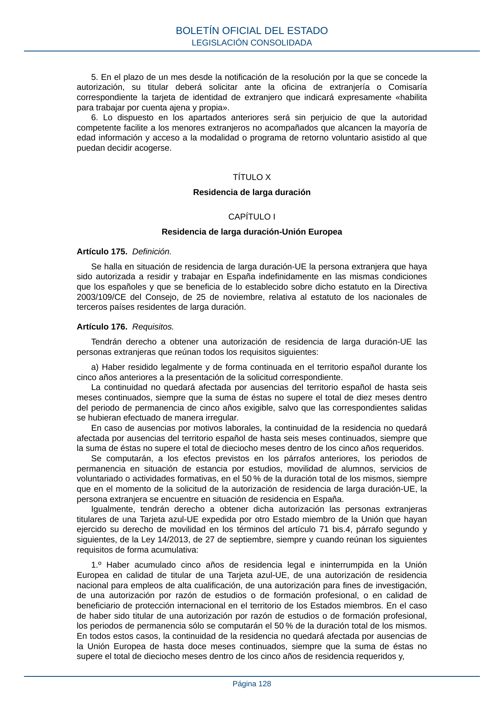
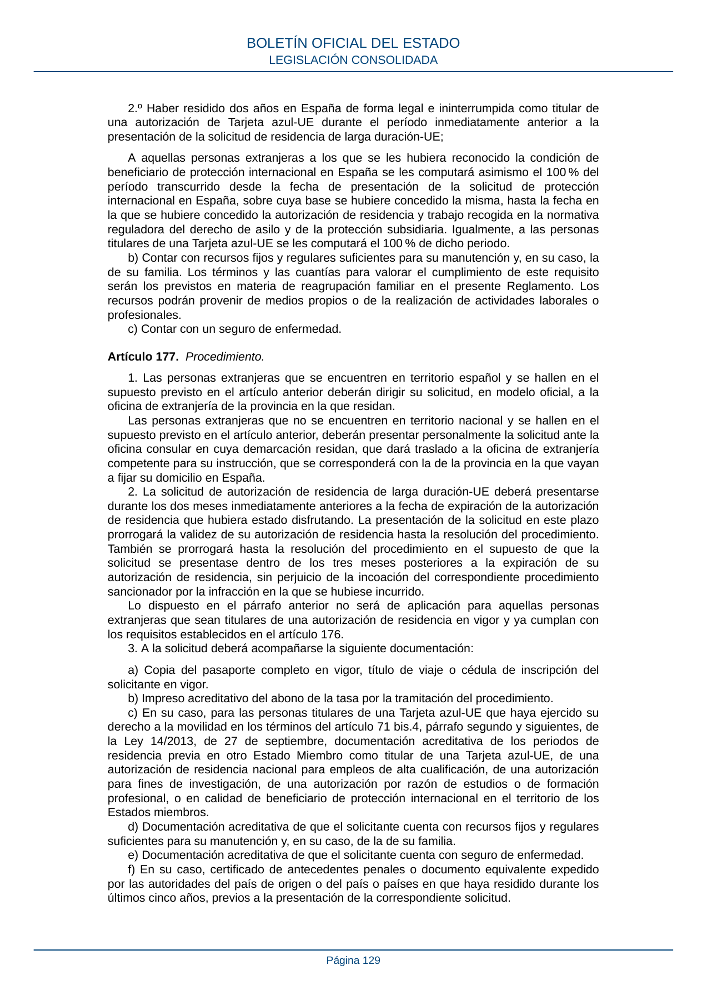
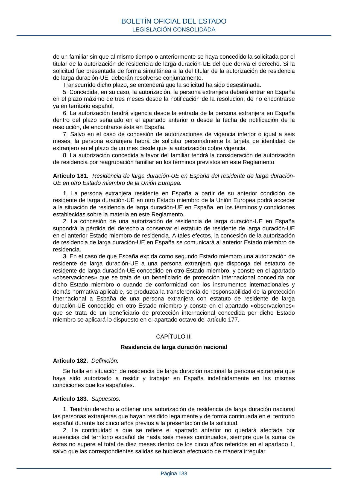
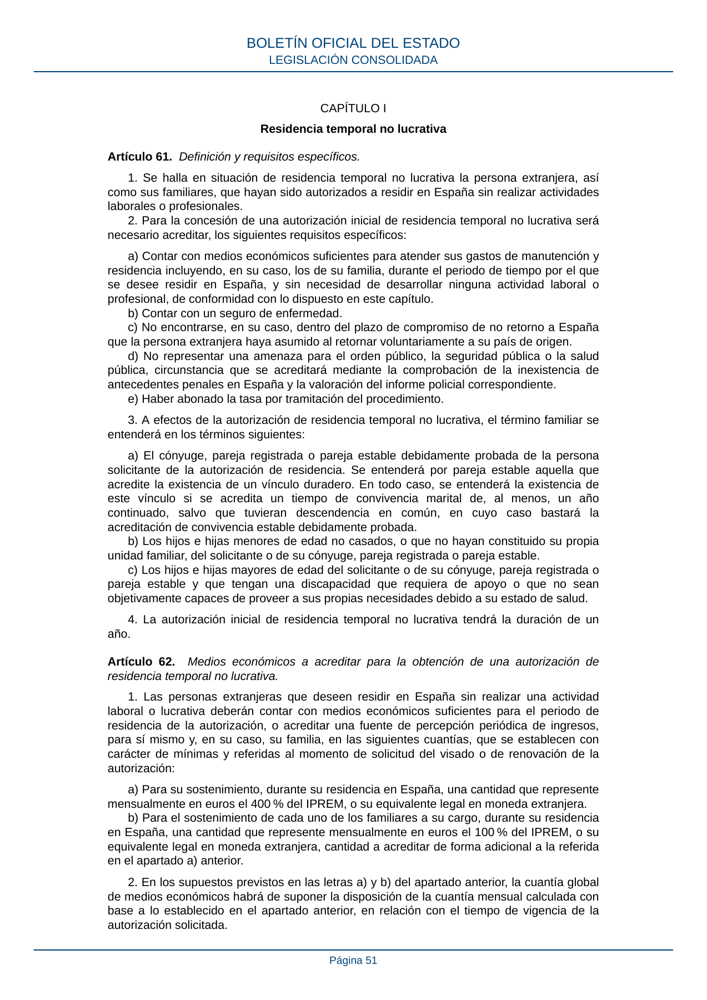
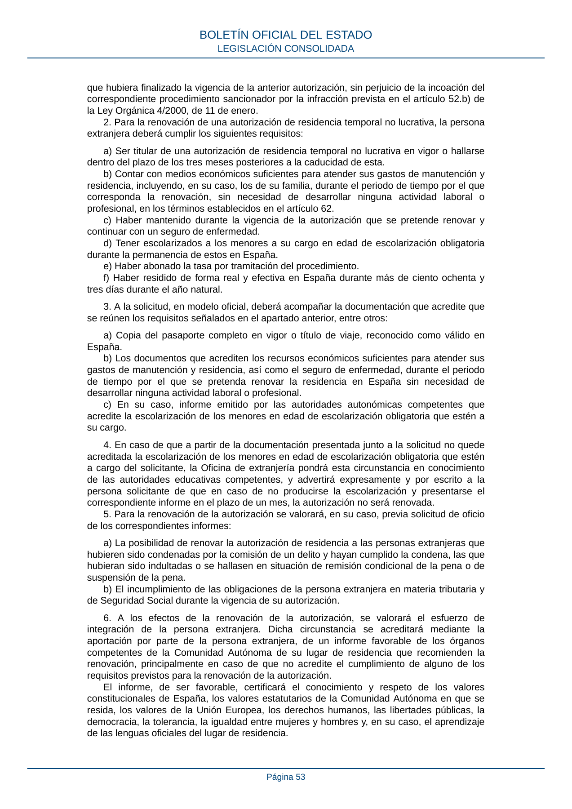
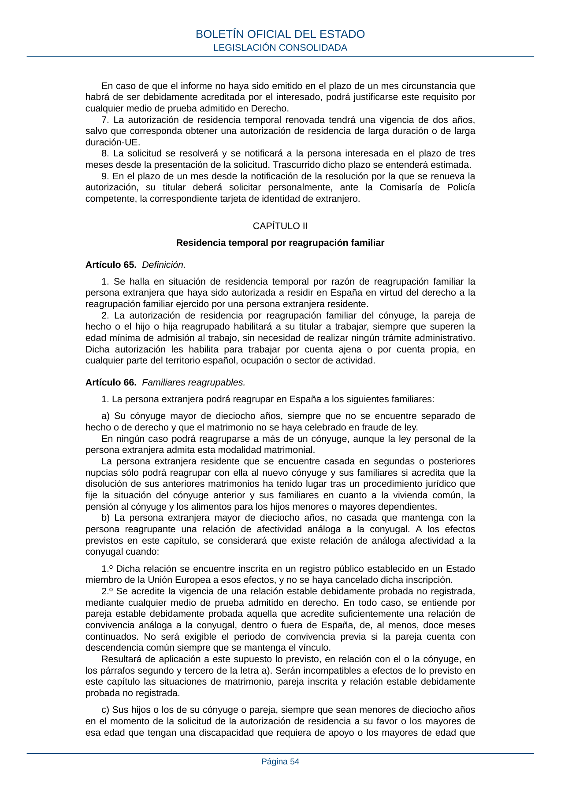

西班牙中小学教育
与五年家庭居留方案
把公校、合法陪伴、禁工边界、五年双账本和长期身份放在同一张路线图上。
开篇导读｜公校能降低学费，家长自己的居留与资金证明才是硬门槛
2026年10月9日专项补充｜先看这两个独立专区：非营利居留申请条件把资格、资金、材料、子女随行、禁工和续签分开；学生转居留与家长团聚说明“学生身份”与“在校读书”的区别。申请欧盟长期居留时不能仍只有学生停留许可，但不要求一定毕业后找工作：已经持合格家庭居留的人，可以边上大学边申请。家长先取得长期居留也不是孩子立即取得PR；真正获批家庭团聚者，有第68.9条及续签指引的特殊衔接，见家长PR后的子女分支。不能把这项特例直接套给非营利随行卡或普通成年留学生。S3S10S32S33
2026年9月30日补充核查｜先回答“五年能不能拿PR”：能申请，但必须先分身份。孩子持非营利／家庭等合格居住许可（residencia）读五年书，满足连续性及其他条件后，可申请全国长期居留，不必先工作。孩子持学生停留许可（estancia por estudios）读五年书，则不能把这五年当作全国长期居留的五年；另一种“欧盟长期居留”才允许合资格学生期间折半，且申请时已经转为居住状态。“在西班牙合法生活五年”与“以合格居住身份连续五年”不是同一句话。通常可短期回国，但单次离境不超过6个月、五年累计不超过10个月，两项都要守；每年住满183天不能替代这项审查。本轮专项依据现行BOE合并文本、移民部Hoja 49／50及2026年4月更新的毕业转身份指引。S1S3S9S10S31
先说结论：孩子在西班牙上公立学校，与家长可以合法陪住，是两件不同的事。可研究的组合是家长自己申请“不工作居留”，未成年孩子随同申请；它要看领馆是否接受孩子的公校安排，也要证明家长有足够的钱、合格医疗保险，之后还能续签。按文中的省钱假设，五年花费已逼近100万元，而且第三年续签时可能拿不出要求证明的资金。现阶段不能把它当作已走通、可按预算出发的方案。下文把“法律已核”“只是假设”“仍须个案确认”分开写。
这次先把三个误解说清楚：家长和未成年孩子可以作为同一家庭安排申请，并非一定要家长先落地、孩子再等一年。家长持非盈利居留期间不能工作，包括在西班牙替境外公司远程工作；但并非禁止一切收入，真实存款及不需本人劳动的合格财力／定期收入可用于证明生活来源。首次申请通常证明首年，而非预先交出五年的全部存款；往后每次续签重新审查。以后如依法获准改为工作居留，工作权才随新许可生效；不能把这条有条件分支当成必然收入。S3S4S25S26
12岁到约17岁的身份重点：家长和孩子如果从一开始分别获批非营利临时居留，孩子边读公校边累积的是“居住”，不是“学生停留”。两人各自达到五年合法连续居住等条件后，可分别申请全国长期居留；不要求孩子先成年、毕业或工作，也不是孩子成功后把家长一起带成PR。相反，真正持学生停留许可的人，申请欧盟长期居留时，合资格学习期间只按50%计算，而且申请时须已转为居住状态。因此“学生停留五年＝折算两年半”，不等于“五年留学就可以拿PR”。条文、原页截图及两种计时图见第09章。S3S9S10S29
快速入口：12岁→17岁居留路线 · 学生五年为何只算两年半 · 官方条文原页截图 · 路线A办理流程 · 家长＋孩子完整申请清单 · 存款与被动收入 · 何时能合法工作 · 首次与续签财力。
本次新增：连续五年的精确定义 · 中学／本科／硕士路线对照 · 毕业怎样转居住 · 长期居留申请材料与保留身份。
读文缩写与原文
| 缩写 | 原文 | 本文含义 |
|---|---|---|
| NLV | non-lucrative visa（常见英文简称）；西语 visado de residencia no lucrativa | 非盈利居留签证：以不在西班牙从事工作／职业活动为前提的家长申请类别。 |
| BOE | Boletín Oficial del Estado | 西班牙国家官方公报；本报告核法规的首要来源。 |
| RD | Real Decreto | 皇家法令；RD 1155/2024是现行外国人条例的主要实施法令。 |
| LO | Ley Orgánica | 组织法；LO 4/2000规定外国人教育等权利。 |
| ESO | Educación Secundaria Obligatoria | 义务中学，一般对应12—16岁。 |
| FP | Formación Profesional | 职业教育；须区分中级、高级及具体课程。 |
| TIE | Tarjeta de Identidad de Extranjero | 外国人身份证件；卡片并不单独决定许可性质。 |
| IPREM | Indicador Público de Renta de Efectos Múltiples | 公共多用途收入指标；用于计算资金证明，本文按2026年月额€600。 |
| SEPE | Servicio Público de Empleo Estatal | 西班牙国家公共就业服务局，本文引用其IPREM数值表。 |
| UE | Unión Europea | 欧盟；“欧盟长期居留”与“全国长期居留”条件不同。 |
| SERPAVI | Sistema Estatal de Referencia del Precio del Alquiler de Vivienda | 国家住房租金参考系统；文中数据来自2024年税务租约，不能当实时新租约报价。 |
| EUR／RMB | euro／renminbi（EUR是欧元货币代码，RMB是人民币常用简称；人民币国际标准代码为CNY） | 欧元／人民币；€与¥是本文金额符号。 |
| Portable Document Format | 便携文档格式；用于领馆旧清单及政府报告链接。 | |
| EX-26 | 西班牙移民部门的 modelo EX-26（表格编号） | 变更居留／停留许可申请表；有表格不等于满足变更条件。 |
| EX-01 | Solicitud de autorización de residencia temporal no lucrativa（表格编号） | 非盈利临时居留申请表；与领馆的国家签证申请表区分，按当届清单准备。 |
| IRPF | Impuesto sobre la Renta de las Personas Físicas | 西班牙个人所得税；非盈利居留不等于免税居留。 |
| SMI | Salario Mínimo Interprofesional | 西班牙最低工资指标；S6表中与IPREM并列，本文资金门槛只使用IPREM。 |
| PR | permanent residence（英文口语简称） | 文中只用于解释常见说法；正式申请应分清西班牙全国长期居留与欧盟长期居留。 |
| CCSE／DELE | Conocimientos Constitucionales y Socioculturales de España／Diplomas de Español como Lengua Extranjera | 西班牙宪法与社会文化知识考试／西语能力文凭；成年国籍申请人通常须核相应考试、豁免或减免。S24 |
当前建议：有条件保留西班牙，先验证“家长非盈利居留（non-lucrative residence）＋随行未成年子女＋公立义务教育（public compulsory school）”。 这条路在国家法律层面有可研究的组成部分，也不会要求家长先有高学历；但它明确不允许家长工作，并须在初次申请与续签时证明足够且不依赖工作的资金。孩子的公校录取和免费义务教育不能代替任何人的居留许可。S1S2S3S4
重大领区未决：原稿引用的一份西班牙驻广州总领馆2023年非盈利签证旧清单，据原稿记录曾要求学龄随行子女提供已缴费私立学校证明，并排除公费学校；本轮因原PDF返回403，无法重新核对原文。该历史线索涉及已被2025新规取代的RD 557/2011，不能当作2026现行要求；但在取得实际中国领区书面澄清前，也不能把“非盈利签证＋免费公校”作为已核准的递签组合。若领馆仍坚持私校，此报告的公校预算立即失效，应重选路线或目的地。教育权与签证材料审查是不同问题。S1S3S22
另一种“孩子学生停留／留学签证＋父母陪读签”的宣传，在现行《外国人条例》下不能当作通用方案。第56条学生家属路径适用于高等教育学生的配偶／伴侣和子女，没有把普通中小学生的父母列为家属。更关键的是：第35.1.f条对第52.1.b条的后义务教育中学学习签证规定申请人须“mayor de dieciocho años”（超过18岁）；因此不能把16—17岁Bachillerato或中级FP录取，写成其可独立申请该类签证。义务教育阶段ESO的普通个人入学，也不应与法规限定的学生流动项目（student mobility programme）混同。S3S5
用2026年IPREM每月€600计，一位家长及一位未成年子女的非盈利居留经济证明下限为家长400%＋孩子100%＝€3,000/月，即首年€36,000；两年续签期间对应€72,000。这是申请时的可用财力／定期收入证明，不是政府要求花掉的钱，也不是保证通过的存款“定价”。首次一年、之后通常每次两年。续签还看保险、孩子就学、实际居住等。S3S4S6
本报告低成本模型的五年支出为约€122,456／人民币95.5万元（只作情景，汇率固定假设€1＝¥7.80），逐年在表内看似达标；但首年的签证／证件／翻译€360仅是假设，尚未按实际两人费用核定。首年只剩人民币1,100元的上限余量，任何费用漏计都可能令该年超标。实际适用费、未成年人收费及其他费用要以辖区当届价目确认为准。此外，如果家庭全部可动用钱仅为¥100万元、没有其他可核实的稳定非劳动收入，第三年末剩余约€55,660，低于下一次两年续签的€72,000资金证明线。即使租金、保险和汇率均按模型不变，也不能据此说五年合法续签已打通。须另有可证明资金或满足法定要求的稳定非劳动收入；它不一定成为五年“净支出”，却是放行条件。S3S4S6
阅读次序：先看第02—04章法律门槛，第07—08章资金双账本，再用第12章放行清单判断是否值得出发。身份时间线中的“有权申请”均不等于获批。
阅读导引
研究日期：2026年9月28日。对象：中国大陆国籍，一个中小学阶段孩子＋一位35—45岁、学历与英语普通的家长；愿意学西班牙语及当地语言。目标为五年净支出不超过人民币100万元、任一年不超过20万元。孩子的教育需求先行；不把家长读硕士、专业工签或非法滞留作为默认前提。本稿是政策与预算尽调，不是签证、学校录取、工作或永久居留获批承诺。金额均须在签约及申请时按当时规则重算。
01｜先回答最容易被混淆的20个问题
| 问题 | 2026-09-28结论 | 对家庭的影响 |
|---|---|---|
| 中国籍孩子能上西班牙公校吗？ | 在西班牙的未满16岁外国人有基础、免费、义务教育权；具体入学名额由地方主管部门分配 | 可以研究公校，不是自选学校保证录取 S1S7 |
| 公校免费是否连午餐、书本、课外活动都免费？ | 免费的是法定基础教学；可选服务和物品另核 | 预算保留学校杂费 S8 |
| 让孩子先拿学校offer，父母就能陪住五年？ | 没有由普通中小学offer自动派生的父母居留 | 家长须有自己的身份 S3S5 |
| 未成年孩子的“学生家属签”能带妈妈／爸爸吗？ | 第56条家属限高教学生的配偶／伴侣及子女等，不列父母 | 不卖通用“陪读签” S3 |
| ESO 12—16岁普通入学就是留学居留吗？ | 法规把一般中学流动项目与个人常规入学区分；不能等同 | 先问领馆具体法律类别 S3S5 |
| 16—17岁的Bachillerato／中级FP录取能用第52.1.b条学习签证吗？ | 不能据此申请该类签证：第35.1.f条要求第52.1.b条申请人“mayor de dieciocho años”；学校可录取与签证年龄是两道门 | 须先有孩子自己的其他合格身份，或随具备独立居留依据的家长申请；家长不由孩子派生 S3 |
| 家长非盈利居留需要大学学历／雅思吗？ | 该类别官方条件不设统一学历／雅思门槛 | 西语沟通、资金与保险仍是实务要求 S4 |
| 非盈利居留家长可远程、兼职或开店赚钱吗？ | 该许可不授权工作或职业活动；不能把未来工资填入基础预算 | 工作需另获合适身份 S3S4 |
| “住满一年就可转工作”是否自动？ | 第191条提供合条件修改通道，仍需真实合同／自雇条件及批准 | 是新增前提，非保底解锁 S3 |
| 一家两口需证明多少钱？ | 现行IPREM模型为€36,000首年；两年续签€72,000 | 与实际花费分开算 S3S4S6 |
| 用房产估值替代现金一定可以？ | 法规容许依法可采的多种证据，但审查可要求账户／价值／流动性资料 | 不把难变现资产当现款 S3 |
| 西班牙有统一“满五年孩子和家长同时PR”吗？ | 各人需分别达到居住（residencia）年限与连续性条件并提出申请 | 不是全家自动转换 S9S10 |
| 学生停留（estancia）五年等于五年永久居留年限？ | 全国长期居留要求五年合法居住；欧盟长期居留的学生停留可在特定条件下半计且申请时已是居民 | 不混算两类长期居留 S9S10 |
| 5年后取得西班牙国籍？ | 中国普通申请人的一般期限是10年合法、连续、紧邻申请的居住，并有品行与融入审核 | 国籍远晚于五年预算 S11 |
| 孩子先入籍能把父母立即带成居民？ | 没有简单的“孩子上学→国籍→父母自动居留”连续套餐 | 每个身份另审 S3S11 |
| 小城市房租低就一定不超预算？ | 官方租金表是旧合同统计，2026新租约可能更贵 | 必须取得真实两人租约 S12 |
| 家长35—45岁是否有绝对年龄障碍？ | 非盈利居留公开条件无此年龄上限；就业另看岗位和能力 | 年龄主要影响长期职业与照护计划 S4 |
| 华人论坛的“有案例”可当审批依据吗？ | 不能；论坛能提示选校与语言问题，法律仍按BOE和部门网页 | 见第11章 S18S19 |
| 低预算只能选国际学校？ | 公校是控制支出的核心；国际私校需独立核费，不能用公校模型代替 | 先确定教学语言与孩子承受度 S1S7 |
| 现阶段可对家庭承诺出发吗？ | 尚未有孩子年龄、目标城市、学校、真实房租、保险、资金证明 | 只能给条件式判断 |
02｜六道互不替代的门：学校、签证、居留、工作、长期居留、国籍
确认具体学校、年级和语言支持。
学生停留 estancia 与家庭随行居住 residencia 分开。
没有普通中小学学生自动带父母的陪读许可。
非盈利期间工作收入按零计算。
孩子实际年龄／既有成绩与语言
→ 地方教育部门学校分配或学校正式录取
→ 孩子自己的合法入境及停留／居留根据
家长独立申请非盈利居留（带未成年孩子）
→ 两人的正式签证／居留批准 → 入境、登记、TIE、实际就学
→ 第1年检查／续签 → 第3年检查／续签 → 5年按各人记录审长期居留
→ 将来若满足10年合法居住等条件，再独立研究国籍
| 门 | 官方上解决的事 | 不能推出 |
|---|---|---|
| 公校学位（school placement） | 孩子在指定学校和年级上课 | 家长签证、随意择校、未来身份 |
| 长期学生停留（estancia por estudios） | 符合签证年龄及第52—53条课程、招生等条件者在核准期间学习 | 普通义务教育均适用、父母陪读权、等同居住 |
| 临时居住（residencia temporal） | 获准在西班牙居住，类别可能禁工 | 公校录取或家长可随便工作 |
| 工作许可（work authorisation） | 按核准类别工作 | 孩子、父母长期居留自动获批 |
| 全国／欧盟长期居留（larga duración nacional / UE） | 达标后申请长期居住与工作权 | 国籍或其他家庭成员身份 |
| 国籍（nacionalidad por residencia） | 按独立法律标准申请西班牙国籍 | 五年自动取得、子女与父母连带取得 |
短期申根C签通常最多90天／任意180天，不能拿来替换五年同住身份；超期居留、假住址、假合同以及把“扎根居留（arraigo）”当预设产品，均不属于本方案。S3
03｜2025新规怎样改变低龄学生路线
3.1 孩子个人“学习许可”的实际范围
2025年5月20日生效的《外国人条例》皇家法令1155/2024第52条把长期学生停留列成若干明确活动：高等教育；后义务教育中学（如Bachillerato与部分中级职业教育）；正式学生流动项目中的义务／后义务中学；其他被列出的培训等。第52条列出课程，不等于所有该课程的未成年人都符合签证条件：第35.1.f条对第52.1.b条规定“mayor de dieciocho años”。普通6—16岁孩子进入公立Primaria或ESO学习，并非仅凭“是学生”就自动落入第52.1.b项；第52.1.c项需要真正的流动／交换项目、负责机构与住宿安排。某些旧领馆页面泛称“认可学校全日制学习”或未随新法同步更新，不能以旧网页覆盖现行法规。S3S5
义务教育权与移民准入权是两套制度：即便孩子依法可以就学，也要为家庭成员取得合适的长期身份。16—17岁后义务教育阶段的孩子，不能以第52.1.b条学习签证作为本报告的独立入境方案；若随家长申请居留，仍要核明确课程、招生资格和两人的真实居留授权。年满法定签证年龄后的第52.1.b条申请，也不能因为读Bachillerato就让家长获得家属许可。S1S3S5
3.2 “学生家属”为什么无法从孩子推给家长
第56条写的是高等教育学生的配偶／伴侣、未成年子女以及特定需支持子女等，并未列年幼学生的父母。有关严重疾病／残疾需要支持人员的例外，也不是一般家长陪读渠道。家长不能通过给孩子报一个私立或语言课程绕过这项亲属定义。该家属类别本身亦不授权工作。S3
3.3 一条单独存在的少年项目路
真实学生流动项目可覆盖中学，但第53条要求承办学校／项目对成本负责，住宿由项目选定家庭、寄宿学校或关联宿舍提供。这更像受管理的交流，不是“孩子去普通公校＋家长租房陪读”的五年同住结构；是否每年有合适名额和能否连续五年，必须逐项核查。S3
04｜路线A：家长非盈利居留＋孩子随行居留＋公校
家长是主申请人；无统一大学学历或雅思门槛。先核真实存款／定期收入、保险和后续续签能力。
目标教育部门核分班与入学；实际中国领馆确认是否接受公校安排。未确认前，不能按零学费宣布可出发。
无需默认家长先独自落地等一年。准备各自表格、护照、保险、亲子／监护和财力文件；家庭预约依领区。
拒签／补件或学校条件未落实，就暂停。不要把预录取、预约或租房合同当批准。
初次非盈利居留通常一年；实际在西班牙生活。公校教学与餐费、教材等杂费分开；此许可不授权工作。
按当前指标，一大一小对应€72,000期间财力证明；重审保险、孩子在校及实际居住。提前两个月进入申请窗口。
财力重新审核，不能把前三年已花的钱算进去。若总资产只有100万元且无其他收入，本报告模型在此出现缺口。
各自五年合法连续居住、离境与许可记录都要合格，并正式申请获批。孩子若中途成年，身份衔接需提前核查。
持居留至少一年＋真实合同／自雇条件 → 申请修改许可 → 获批及完成生效条件 → 才能工作。孩子的许可同步复核；这条分支不作为基础预算的预期工资。
看工作权限与转身份细则 →准备步骤可并行；图中年份为许可持续获批的理想时间线，不是审批保证。规则依据及材料清单见本章正文；资金明细见第08章。
顺序的核心：家长先具备独立申请资格，不等于必须先独自拿卡、等一年才能带孩子。本路线按亲子一起准备、向实际领馆协调家庭申请来规划；家长是主申请人，孩子也有本人签证／居留申请和文件。不是孩子先拿学签，再给家长“发陪读签”；也不是初次就从境内启动通常的家庭团聚程序。当地教育权保障与境外签证材料仍须分别通过。S3S4
4.1 法律机制与持有条件
家长作为主要申请人，在中国居住地有管辖权的西班牙领馆申请非盈利居留签证；未成年、未婚、未自组家庭的孩子可作为法定家庭成员一同申请。主要申请人证明资金、医疗保险、无刑事记录、健康及身份文件；孩子的亲子关系、监护／另一位监护人许可和学校安排按领馆及地方要求准备。国外公文要按当时要求公证、附加证明书（apostille）或合法化，并配合有资格的西语翻译。不同领区材料清单可能更细；上海领馆网页列有该签证及未成年子女，但访问该页时原文抓取受到403限制。原稿引用的广州2023旧清单有自费私校要求的记录，但本轮无法重读原PDF；公校是否可作为本家庭随行孩子的递签学校安排，必须由实际领区依现行新规书面答复，之后才可采用第07章的公校预算。S3S4S13S22
首次居留一年，获批入境后按期申请外国人身份证件TIE；续签通常每次两年。续签要维持适格医疗保险、未成年孩子持续就学、真实在西班牙居住，并重新证明下一个许可期间的钱。法规现列每自然年在西班牙实际居住超过183天作为续签条件。短期回国探亲应保留出入境和在西生活证据，不能用“每年飞来一次续卡”维持身份。S3S4
4.1A 独立专区｜非营利居留怎样申请？
说人话：这是“有足够生活来源、暂不在西班牙工作”的居留，不是花一笔钱购买身份，也不是孩子入学附送的陪读签。NLV是英文 Non-lucrative visa 的常见简称；西语签证名为 Visado de residencia no lucrativa，对应许可为 Autorización de residencia temporal no lucrativa（非营利临时居留许可）。签证负责入境，居留许可及其生效、续签负责长期生活；住址登记与TIE卡不是另一种获批捷径。核查日期：2026年10月9日。S3S4
A｜先过资格关：哪些是条件，哪些不是？
| 类别 | 必须成立的事实 | 不能误解成什么 |
|---|---|---|
| 适用人群 | 本报告中国籍家庭，走非欧盟国民通常制度；不得处于不合规停留等不符合申请条件的状态 | 不把欧盟／西班牙公民家属规则套给中国籍PR家庭 |
| 不工作生活来源 | 有足以支付本人及随行家属生活的可用资源或可证明定期收入，无须从事劳动／职业活动维持 | 有境外公司不代表可在西班牙继续远程上班；工作规则见4.2及8.2 |
| 保险与健康 | 有符合要求、覆盖家长及孩子的保险和医疗证明 | 便宜旅游保险、信用卡赠险不自动满足要求 |
| 可入境性 | 按要求接受犯罪记录、公共秩序／安全／健康等审查，不处于适用的禁止入境或不返西承诺期 | 有钱、学校录取不能替代审查 |
| 真实家庭关系 | 未成年子女符合第61.3条；按亲权事实准备关系、监护及另一家长同意文件 | 孩子有自己的申请；不能只用父母的居留卡替孩子取得身份 |
| 申请程序 | 向本人合法居住地主管领区申请，递交各自文件、缴费并处理补件 | 不把旅游入境后直接换NLV当标准途径 |
| 不设的统一门槛 | 该类别没有统一大学学历、雅思／西语考试成绩、35—45岁禁入线或雇主担保条件 | “没有这些门槛”不等于很容易获批；沟通能力和真实计划仍影响可执行性 |
依据：第38—39、61—63条及移民部Hoja 6。不是所有家长都要先退休；但仍实际工作的经营者，必须核实本人工作与管理安排是否符合不从事职业活动的要求，不能只把工资改名为分红。S3S4
B｜资金关：一位家长＋一个孩子怎样算？
IPREM全称 Indicador Público de Renta de Efectos Múltiples（公共多用途收入指标）。2026年官方页面列月基数€600；主申请人400%，每位家属另加100%。以下是财力证明，不是政府收费、消费定额或保证获签价。S6S34
| 谁／哪个时间点 | 算式 | 对应金额 |
|---|---|---|
| 一位家长每月 | €600×400% | €2,400 |
| 一个随行孩子每月 | €600×100% | €600 |
| 两人首次一年 | €3,000×12 | €36,000 |
| 其后一次两年续签 | €3,000×24；假设届时指标不变 | €72,000 |
不是“必须有€36,000存款，同时还必须月入€3,000”，也不是首次就冻结五年€180,000。第62条接受足额经济资源或可证明定期收入，实际组合与可用性要审。常见候选是储蓄、养老金、无需本人劳动的真实租金／股息；公司营业额、未变现估值及预期打工收入不能直接当作可花现金。具体收入证据与税费见被动收入分类。S3
外国银行／金融账户材料按现行第62条包括：机构名称地址、账户完整标识、开立／注销或相关授权日期、上一年12月31日余额及最近一年平均余额；并按实际清单补最新余额、流水及来源文件。不是“刚借一笔钱放账户就够”。按原预算汇率€1＝¥7.80，首年证明约28.08万元、两年约56.16万元；这不表示生活消费必须超过20万元，但必须在花钱之后仍能通过下次财力审查。S3
C｜材料关：按三组准备，不把建议当统一必交件
| 材料组 | 主要内容 | 最容易漏掉的点 |
|---|---|---|
| 家长本人 | 护照、国家签证申请表、EX-01居留表、照片、适用费用、保险、财力、医疗及适用无犯罪证明、领区居住依据 | 国家签证表与EX-01不是同一张；各项有效期和格式依受理领区 |
| 孩子本人 | 孩子护照与申请、出生／亲属关系、监护及不同行父母同意、孩子保险、适用医疗／学校资料 | 家长获批不自动包含孩子获批；孩子材料减免按年龄与正式清单判断 |
| 跨境与生活安排 | 按要求翻译、附加证明书或合法化，真实住所和教育安排，不工作生活来源说明 | 不要求人人买房；不能把不适用旧清单、美国领区材料格式原样套到中国 |
第4.3节保留14项完整工作清单。正式材料以实际中国领区最新版为准；无需为“显得可信”伪造公司安排或购买不适配课程。S3S4
公校申请必须单独核实：法律上的未成年教育权与公立教学免费，不是NLV专属优惠；但孩子入学及境外领区要求分别审核。原报告记录的广州2023旧私校材料要求，本次原PDF仍读取失败；本页不把它写成现行普遍限制，也不据此承诺任何领区已接受公校递签。出发前请主管领馆对本家庭的免费公校安排作书面确认。不能虚报私校计划以获得签证。S1S22S23
D｜办理顺序：同时规划，分别获批
把两人的首年生活与第1／3年续签财力分别算好；不依赖未来当地工资。先确认可接受的孩子学校安排。
向主管领馆或指定渠道递交各自材料，家庭申请可协调推进；不必一律家长先去住一年。
预约、缴费、录取信不是批准。只在身份和真实学校安排落实后，承担不可退的长期开销。
TIE全称Tarjeta de Identidad de Extranjero（外国人身份证件），入境一个月内申请；居留从实际生效日记录，不从准备材料开始算。
首次通常一年，续签通常两年；父母与孩子都要维护有效身份，不能只管理家长证件。
程序依据见S3S4。获批时检查本人批准决定；不以图中的顺序承诺固定审理周数。
E｜续签不是形式手续：五项要继续成立
| 关口 | 需要维持的条件 |
|---|---|
| 钱 | 未来许可期的足额财力；已花掉的本金不能继续算可用 |
| 医疗 | 持续维持合资格保险，不只是递签时买一张保单 |
| 学校 | 处于义务教育年龄的受抚养孩子已入学并持续就学 |
| 实际居住 | 第64.2.f条列每自然年实际在西超过183天；年中入境等具体计算须核，不能以一次入境替代 |
| 及时申请与守法 | 正常到期前两个月递交；同时核税务、身份及其他续签要求。长期居留的6／10个月离境限制另外审 |
不能一直拿NLV却在当地打工。如以后真实符合工作居留修改条件，可另申请改变身份；已合法衔接的居留时间不因换类别当然清零，但不能把变更申请或面试当作已经有工作权。完整条件见工作分支。S3S25S26
4.2 五年都不能工作吗？看当时持有什么许可
维持非盈利居留，就不能工作；依法换成可工作的身份，才可按新许可工作。所以“这五年绝对一分钱都不能赚”不准确，但“第一年先不工作，第二年肯定打工补钱”同样不成立。基础预算仍按工资€0；退休金、租金等非劳动财力另审，见第08章。
| 当时身份／阶段 | 工作权限 | 怎样才可能改变 | 预算处理 |
|---|---|---|---|
| 始终持非盈利居留 | 不能受雇、自雇或在西班牙从事远程职业活动；雇主在国外不构成豁免 | 保持无工作生活来源并续签 | 工资按€0 S3S26 |
| 持居留未满一年，拟转受雇工作 | 没有自动工作权 | 第191.2条要求满足第74条完整条件，包括全国就业形势审查或适用例外；有合同也未必够 | 不列默认降费路径 S3S25 |
| 持居留至少一年，原许可不许工作 | 仍不能因满一年直接开工 | 第191.4条可申请受雇／自雇居留；受雇免第74.1.a项全国就业形势条件，其余合同、雇主偿付能力、税务／社保及职业资格条件仍审；自雇另审第84条 | 获批并完成生效所需社保登记后才计真实收入 S3S25 |
| 将来获批全国长期居留 | 允许按一般适用规则居住与工作 | 须先达到五年等要求，正式申请并获批；不是满五年自动开工 | 第五年后的收入不倒填前五年 S9 |
对普通学历家长真正有用的备选：先有足以独立生活的资金，陪孩子适应并学习西语；期间合法寻找愿意提供真实合同的雇主。满一年后若符合变更条件，再申报受雇工作居留。餐饮、清洁、零售可以是求职方向，但本报告没有核实岗位、录用意愿或工资；不能为证明路线成立而虚构工作。第191.4条下的新许可通常一年，获批后须在规定期限内完成社保登记；未生效前不可先上岗。孩子的现有许可、续签类别与共同资金也应同步核查，不能只改家长而遗漏孩子。S3S25
国际远程工作（digital nomad / international telework）也只给有真实境外雇主／客户关系与专业资格的人：法规要求相应学历或至少三年可证明专业经验、企业实际运营及远程工作证据；对弱学历且未证明远程职业的家庭，不列默认方案。不得用非盈利身份暗中承接远程有酬业务。S15
移民部门的国际远程工作官方问答第13问专门指出：非盈利许可不许工作，不能把该期间的远程工作作为已完成的合法工作经历来申请远程工作居留。不要采用“先非盈利入境，偷偷远程干三个月再换签”的做法。S26
4.3 家长＋一个未成年孩子：整体申请清单
这是一份国家规则＋本家庭核查清单，不是任何中国领区已经认可的完整递签清单。国家基本条件与各领区文件格式、有效期、预约及补件要求要一起满足；以下未填入具体家庭文件，均不是“已通过”。S3S4
| 核查项 | 谁准备／证据是什么 | 合格边界与容易漏掉的事 |
|---|---|---|
| 01 主申请资格 | 家长：有效护照、国籍与合法常住地、领区归属 | 本类别不设统一大学学历、雅思或35—45岁禁入门槛；有钱不等于必批 |
| 02 两人分别申请 | 家长与孩子：国家签证表、EX-01居留表、照片、费用与预约材料依领区清单 | 可以协调同批家庭申请；孩子不是只在家长护照上附名字，签证与许可均须逐人核 |
| 03 孩子的家属资格 | 出生／亲子证明；若收养，正式收养关系证明 | 按第61.3条未成年子女等定义审；不把健康且已成年的子女自动计入同一首次申请 |
| 04 另一监护人安排 | 不随行父母的同意、亲权／监护文件；离婚、单独监护、死亡等真实证明 | 要核“同意长期居住与入学”，不能仅用短期旅行同意替代；具体形式由领馆决定 |
| 05 首年财力 | 主申请人及家庭真实可用资金、来源、银行及定期收入文件 | 一大一小当前计算€36,000首年；不是给政府交这笔钱，也不是孩子录取即可免审 |
| 06 后续资金能力 | 第1年与第3年各做未来两年的证明预演 | 每次€72,000为当前IPREM不变时的计算；不可把已消费的存款重复列为可用余额 |
| 07 不从事工作 | 解释如何停止／不在西班牙进行劳动或职业活动，依实情提供退休、离职、公司职务／管理安排等材料 | 这些材料是否逐项必交看领区；境外发工资、在国内公司挂名不自动解决禁工问题 |
| 08 医疗保险 | 两人均覆盖，保险机构获准在西班牙经营；拿到正式保单与承保说明 | 覆盖范围、共付额、等待期、既往症与缴费期限按领馆核；普通旅游险不能自行视为足够 |
| 09 犯罪记录与健康 | 按年龄和领区要求提供无犯罪证明、符合《国际卫生条例2005》表述的体检／医疗证明 | 成年人近五年居住国家的相关犯罪记录需核；儿童是否免交具体材料由领区年龄规则判断 |
| 10 翻译与认证 | 外国公文按要求附加证明书或合法化，配认可翻译；带原件和副本 | 不是把每份银行流水一律办双重认证；逐文件确认形式、签发与有效期限 |
| 11 学校与教学语言 | 孩子生日、成绩、既有年级；教育部门入学流程、名额与语言支持；领馆书面确认公校安排材料 | 最关键未决项：实际领区是否接受本案公校安排递签。教育权与境外材料要求不是同一关 |
| 12 家庭住房 | 可供两人合法居住及登记的住房安排，租期、费用、学区与退款条款 | 不把买房写成全国强制条件；递签阶段要何种住房证明依领区，避免无条件不可退租约 |
| 13 入境后手续 | 获批后按签证有效期入境；住所登记（empadronamiento）、TIE、正式学籍 | 法规要求入境一个月内申请TIE；住址登记不替代居留许可，也不授权工作 |
| 14 续签／成年节点 | 持续保险、实际居住、未成年义务教育在校记录、完整护照、更新财力 | 到期前两个月进入正式续签窗口；建议更早整理材料。孩子18岁前另核身份延续，不许默认自动不断 |
学校安排与签证时间可能互相依赖，应把教育局／领馆核验放在支付定金之前。不得以一个“预录取”代替居留批准。孩子随父母拿居住许可读书，不意味着公校免费权是这个签证独占的福利；免费教育权范围更广，但教育权本身不给父母发签证。S1S3
05｜按年龄选择学校：西语适应比“零学费”更早影响成败
| 入境年龄 | 正常学段 | 可行教育入口 | 本家庭最关键的核查 |
|---|---|---|---|
| 约6—11岁 | Primaria，小学6年 | 公立或受资助学校申请；按地方分配 | 西语基础、区域另一官方语言、阅读／数学习惯、上学接送 S7S16 |
| 约12—15岁 | ESO，义务中学4年 | 公校义务教育；境外学生按年龄、既有学习和知识安排入读 | 初期语言和学科同时追赶，能否毕业，校内语言支持实际可用性 S7S17 |
| 约16—17岁 | Bachillerato两年或中级FP等 | 后义务教育，公立Bachillerato课程免费；入学仍审资格、学位与现有合法身份 | 中方成绩与西班牙资格衔接；第52.1.b条学习签证年龄门槛排除本年龄段 S3S17S23 |
| 18岁及以上 | 高教／成年职业教育等 | 大学或职业课程各按本身招生及身份规则 | 未成年随行身份到成年时的衔接，费用及许可另算 S3 |
西班牙全国规则赋予外国未成年人义务教育权，公立基础教育免费；未满18岁的外国人亦有后义务教育权，教育部说明公立Bachillerato教学免费，但入学资格、学位及杂费仍须核实。校区、学校、年级和支持资源由自治大区及学校管理。进入公校不保证理想学校，也不等于孩子无需西语。地方的教学语言可能增加第二门压力：例如瓦伦西亚自治区已让公立／受资助学校按校级、年级和家庭选择安排“基础语言”西语或瓦伦西亚语；租房前必须查具体学校、具体年级的教学语言和实际可用学位，不能只看城市名字。S1S7S16S18S23
对12—15岁初到者，建议先用正式的西语水平诊断、学科词汇评估及学校提供的具体辅导说明决定何时转学。中文社区互助可改善生活适应，但不能替代教学语言。若孩子出现明显抗拒、校园冲突或进度跟不上，应先与班主任、语言支持人员及家长沟通，再决定转校或回国；不为守住五年身份线牺牲实际学习与安全。
06｜私立、受资助与公立的取舍
| 类型 | 学费与费用逻辑 | 对本预算的意义 | 必查文件 |
|---|---|---|---|
| 公立（público） | 法定6—16岁基础教学免费；午餐、用品、交通、课外等可能另付 | 是五年低预算的基础 | 教育局学位、实际分配、语言、附费 S1S7S8 |
| 受资助（concertado） | 法定免费教学不得强制收取关联款项；可选服务分开 | 可能有宗教／教学特点，不能默认“无任何费用” | 具体强制与自愿收费、学位与语言 S8 |
| 私立／国际学校 | 学校自定学费及入学费，课程可能以英语授课 | 英语便利通常显著增加现金流；不能把公校模型套用 | 2027及以后逐年合同、退出退款、课程资格 |
把孩子送入私立学校有时有利于语言过渡，但应另做完整五年报价。现有站点所收集的2026/27学校价格只能作线索，不作为本报告的已锁定学位或五年固定价格。原稿所引广州旧清单有私校已缴费要求的记录，但本轮无法重读原PDF，因此公校支出模型在中国领区递签环节仍有待澄清的条件风险；国家教育权不能单独消除领馆材料问题。中介称“先用私校递签、入境就转公校”，可能在初次材料真实性、校区分配及退款上都出现冲突；需以实际领馆书面答复和学校合同审定。S1S22
07｜五年费用模型：每一年都低于20万元才算通过第一层
条形满格＝人民币20万元。工资按零；不含私校或大学，不含额外中介费。这是按未获报价的输入演算，不代表实际年度达标；还须另过续签财力关。
7.1 可复算的假设
适用年龄边界：这是原有的公校低消费模型，不是12岁家庭的新报价。12岁入境、正常升学的五年，通常覆盖ESO四年＋公立Bachillerato第一年，约17岁时可能达到五年居住节点，并不必然在这五年内上大学。公立Bachillerato教学免费，但高中教材、设备、通勤、语言辅导可能变化，应逐项替换预算。不能由此推断所有FP类别、私校或大学均免费；16—17岁才出发的家庭更不能直接套表宣布达标。18岁后的家庭成员居留衔接也须另审。S17S23
货币统一为欧元（EUR）；人民币只按模型汇率€1＝¥7.80换算，不声称这是2026年9月28日市场即时价。假设一位家长＋一位孩子、非盈利居留工资€0、两人租一套合法可登记的小型住房、孩子在公立义务教育就学、全年实际居住，首年需额外安家及国际交通费。基准城市应在真实住房与学校可同时满足的前提下选择，例如在Castellón、Elche、Alicante一带逐个核验，不把不同城市的最低报价任意拼合。官方SERPAVI 2026报告反映的主要是2024税务租约：Alicante月中位€608、Elche €483、Castellón €500、València €681；这些是历史存量合同统计，不是2026新来者可签的租金。因此本模型用€750/月作为需要用真实租约验证的目标，不称作现成报价。S12
| 年1经常项目 | 公式 | 欧元／年 | 性质 |
|---|---|---|---|
| 两人住宅租金 | €750×12 | 9,000 | 模型；需真实可登记房源 |
| 食物与日用品 | €450×12 | 5,400 | 模型；以两人实际消费核验 |
| 水电网与通信 | €150×12 | 1,800 | 模型 |
| 两人适格医疗保险 | €200×12 | 2,400 | 模型；以可获签证接受的报价替换 |
| 市内交通 | €70×12 | 840 | 模型；依校区通勤重算 |
| 公校用品、午餐／活动留额 | — | 700 | 教学免费不代表其他全部免费 |
| 家长／孩子西语学习 | — | 800 | 低配支持额，不能保证足够 |
| 签证、证件、翻译与行政 | — | 360 | 未核实的年均摊假设；须逐人、逐项核当届收费和实际支付年份 |
| 医疗自付、服饰及其他缓冲 | — | 1,200 | 模型 |
| 经常项目合计 | 22,500 | 后续年度按每年3%通胀情景递增 | |
| 首年安家、机票、押金不可回收部分 | — | 3,000 | 一次性费用；押金若可退不应算净支出 |
| 首年模型支出 | €22,500＋€3,000 | 25,500 | ¥198,900 |
住房押金若只是可退还的资金占用，应单列为现金流而非净支出；代理费或无法退还的损失才列进净支出。模型€3,000是一揽子留额，尚需按真实机票、搬运、租房代理费与押金拆开，避免双算或漏算。私校学费、第二位家长、回国旅行、严重疾病及大学费用均未包含。
7.2 逐年上限审计
| 居留／学年 | 年支出公式 | 欧元 | 按7.80折人民币 | 是否低于20万元 |
|---|---|---|---|---|
| 第1年 | €22,500＋一次性€3,000 | €25,500 | ¥198,900 | 是，余¥1,100 |
| 第2年 | €22,500×1.03 | €23,175 | ¥180,765 | 是 |
| 第3年 | €22,500×1.03² | €23,870 | ¥186,188 | 是 |
| 第4年 | €22,500×1.03³ | €24,586 | ¥191,774 | 是 |
| 第5年 | €22,500×1.03⁴ | €25,324 | ¥197,527 | 是，余¥2,473 |
| 五年 | 未四舍五入的每年金额求和 | €122,456 | ¥955,153 | 比100万元少约¥44,847 |
以上四舍五入产生几欧元差异。表中“是”只表示所列假设的算术结果，不是已核实的实际费用结论。首年总额距离¥200,000仅¥1,100；两人的签证／居留费、翻译与公证、保险首付、住房押金现金占用及机票必须按实际支付时间逐项核。表内€360是每年平均化模型，不等于首年真实账单；若首年净支出比表内多出超过约€141，首年即超上限。五年仅余约4.5万元；€1升到¥8时，首年已经为¥204,000、第五年约¥202,592，逐年上限失败。若月租比模型高€100，五年基准价增加至少€6,000／¥46,800（还未计涨租），五年总额直接超过100万元。这是一张压力很大的情景表，不是可售套餐。
08｜签证资金证明与消费预算是两本账
基准汇率7.80；收入0，需公校＋低租金。
若起始总钱只有100万元，模型余额约€55,660。
额外资产不是已经花掉的钱，但必须真实可用；不能以违法工作弥补。
8.1 2026年的最低证明线
第62条按申请当时IPREM计：主申请人400%＋每一家庭成员100%。SEPE当前列月IPREM €600，所以本案例每月€3,000，首年€36,000。非盈利首次许可一年；两年续签时按许可期计算即€72,000。资金可以用法律认可的证据或定期收入证明，审查会看实际可用性、来源与外国账户细节，不能仅拍一张静态余额截图。IPREM和审查口径日后可能变。S3S4S6
| 关口 | 需证明的期间 | 本次法定金额计算 | 家庭应另留意 |
|---|---|---|---|
| 初次申请 | 1年 | €3,000×12＝€36,000 | 保险、材料、签证与学校安排另审 |
| 第1年末续签 | 2年 | €3,000×24＝€72,000 | 需持续保险、孩子上学、实际居住 |
| 第3年末续签 | 2年 | €3,000×24＝€72,000 | 不因已花三年生活费而降低门槛 |
不是首申必须存五年的€180,000。不能把€36,000＋€72,000＋€72,000加成一笔首次强制存款；这三个数是不同审核节点对相应许可期的证明要求，既不是政府收费，也不是同一笔钱要冻结五年。反过来，“我有€36,000，所以以后四年不用考虑”也不成立。仅使用存款的人要保证花掉生活费之后，每次续签时仍有足够的可用财力；用稳定定期收入的人，则须证明收入真实、持续、足够且不依赖禁止的工作。S3
8.2 不能工作 ≠ 没有收入：存款、被动收入与禁区
全国规则没有另设“必须每月都有被动收入”的独立门槛。第62条接受足够经济资源，或者可证明的定期收入来源；所以有足够、真实、可用存款的家庭，不因没有养老金／租金就当然不符合。若主要靠定期收入，一大一小应围绕现行€3,000/月的家庭证明线准备。具体资产与收入如何被采用、组合如何认定，仍须领馆／续签机关审核，不能把“钱在银行”或“写作被动收入”当自动通过。S3S4
下面是按法律原则整理的证据准备方向，不是政府逐项保证接受的收入白名单。关键看钱从哪里来、是否需要本人继续劳动、是否可用和能持续多久。
| 资金／收入来源 | 是否适合研究 | 建议准备的证据／限制 |
|---|---|---|
| 已有存款本金 | 可以研究；本金本身不是月收入 | 银行证明、来源说明与流水。外国账户按第62条包括银行名称地址、账户标识、开立信息、上一年12月31日余额及最近一年平均余额；另备最新可用余额，不用临时借款“摆账” |
| 退休金／年金 | 可作为无需本人继续工作的定期收入候选 | 发放机构证明、期限、金额与实际入账；35—45岁家长不可把尚未到领取年龄的未来养老金填进预算 |
| 长期出租自有房产所得 | 可研究不需本人经营的租赁收益；非一律接受 | 产权、租赁合同、历史收款、持续租期及管理安排；预算扣除税、按揭、维修和空置风险。亲自经营民宿／提供持续服务不应直接称为被动租金 |
| 利息、股息、已实现投资收益 | 可研究；需区分持有资产与经营公司 | 账户与持有证明、派息记录、可用余额、非劳动事实；股价上涨、预测回报不是保证收入。第62条对其列明的公司股权来源另要求不从事劳动的证明和声明 |
| 在中国／美国公司领工资，人在西班牙远程干活 | 不能作为NLV允许工作的解释 | 收款银行、客户或公司在国外不改变实际在西班牙工作；移民部门远程工作问答已明确禁区 S26 |
| 自己开店、接单、做付费咨询或持续经营网店 | 不属于本路线允许的职业活动 | 必须另获相应工作权限；不因“收入少”“只服务华人”豁免 |
| 国内配偶支持、一次赠与、出售资产所得 | 个案审查，不默认等同永久稳定收入 | 关系、合法来源、真实转移及可支配性，确认领区接受方式；卖房款是有限资本，不是每年重新发生的收入 |
被动收入也不等于免税收入。长期实际住在西班牙可能成为税务居民：一年超过183天、经济利益中心等是税务部门列出的判定因素。税务居民的一般个人所得税规则涉及全球所得，具体双重征税抵免、租金与股息处理要另核。移民续签183天与税务183天不能只看数字相同就当成同一套计算。应以扣除必要税费后的可支配金额做家庭生活预算，而非直接把境外毛收入全部拿来抵支出。S27S28
资金证据链：来源文件 → 历史入账 → 目前可动用金额 → 未来许可期的持续性 → 税费／汇率压力测试 → 领馆或续签机关确认。股票、房产或一笔大额入账的名称本身不完成这条证据链。
8.3 本预算的“第三年缺口”
若出发时全部可动用资产就是¥1,000,000＝模型€128,205，没有其他可证明收入：
起始可用 €128,205
− 第1年 €25,500
− 第2年 €23,175
− 第3年 €23,870
= 第3年末约 €55,660
下一次两年资金证明线：€72,000
资金证明缺口：约 €16,340（按7.80约¥127,452）
首年及第一次两年续签的余额理论上可过最低数值，但第二次续签不能只拿模型剩款当足额证明。可行的补充条件是另有真实、合法、可由领馆／移民部门接受的资产或持续非劳动收入，且五年净支出依然逐年符合用户上限。额外可用资产本身不是支出；然而拥有它与“家庭总共只拿得出100万元”完全不同。若以未来找本地工作作为资金来源，就必须先得到相应工作授权并重做路线与预算，不能藏在非盈利方案之内。第64条还要求在西实际居住、持续保险与未成年就学，因此钱够也未必获批。S3S4
09｜五年以后：两个人分别算长期居留，十年再看国籍
各人连续性和批准日期单独审。
欧盟长期居留有特定半计规则和转居住前提。
不是拿长期居留后再固定等十年；非自动护照。
这一章的判断顺序：先看批准的许可名称 → 再看合格时间 → 再查离境和续签 → 最后审申请条件。不是先数几张成绩单。下文讨论普通中国籍家庭的教育路线；欧盟公民家属、难民、欧盟蓝卡跨国累计及特殊贡献等另有制度，不能套用本表。
9.1 全国与欧盟长期居留的区别
先认准卡背后的许可，不是看本人有没有读书。非营利居留的西语是 residencia temporal no lucrativa；它不是“非移民签证”这个美国式分类，也不是孩子学签派生的父母陪读签。父母以自己财力获准居留，孩子作为家庭成员另获自己的居留许可，然后依法读书。孩子的主要日常活动是学习，并不会把这张居留许可自动变为学生停留。S3
为什么合法留学不等于这里的“合法居住”？《外国人组织法》第29条把外国人的身份分为停留与居住；第30 bis条的居民，是持有居住授权的人；第33条把以学习为目的获准的身份列入停留制度。因此，两者都可以合法，但计时规则不同。TIE（Tarjeta de Identidad de Extranjero，外国人身份证件）是证件名称，不是许可类别；有TIE不一定持有residencia。学生许可名称中的 estancia de larga duración（长期停留），也不是 residencia de larga duración（长期居留／本文俗称PR）。S1S3
| 对比 | 全国长期居留 | 欧盟长期居留 |
|---|---|---|
| 正式名称 | residencia de larga duración nacional | residencia de larga duración-UE |
| 主要条文 | RD 1155/2024第182—185条 | 第175—178条；欧盟指令2003/109/EC第4条 |
| 一般年限 | 申请前五年合法连续居住 | 五年合资格计时；特定学生停留可折半 |
| 非营利居留期间 | 合资格居住时间正常计入，不因不能工作而打折 | 合资格居住正常计入；另审本类别条件 |
| 真正的学生停留期间 | 不能直接套第183.1条当居住五年；该普通条款没有学生半计机制 | 第176.a条明定按50%计，并要求申请时已在西班牙处于居住状态 |
| 财力与保险 | 不把非营利续签的400%＋100% IPREM直接搬成全国长期居留的独立普遍门槛；前五年仍须维持有效身份 | 第176.b、c条另要求固定、定期的足够资源及医疗保险；资源不一定须来自工作 |
| 获批后的工作 | 在西班牙无限期居住、工作；仍守劳动法和身份维持规则 | 同样可在西班牙居住、工作；赴其他成员国长期居住／就业仍须依当地条件申请，不等于欧盟公民自由流动 |
来源：S3S9S10S29S30。本文PR仅为 permanent residence（永久居留）的说明性英文简称，实际递件要写准确的西班牙许可名称，不把两种制度合并成一张“欧盟绿卡”。
5年居住 → 计5年
孩子同时读书，不会打五折。
五年等条件满足 → 申请全国长期居留5年停留 → 计2.5年
尚差2.5年合资格居住；申请时须已转为居住状态。
年限＋连续性＋资源＋保险 → 申请欧盟长期居留右侧是第176条计时原理，不是12岁普通公校学生独立学签的现成路线。上述计算不代表获批。
9.2 学生五年折算两年半：到底折算什么？
折算的是申请欧盟长期居留所需的“合资格年限”，不是学费、学分、签证有效期，也不是把已经生活的五年变成五年PR资格。例如60个月符合条文的学生停留，按50%只贡献30个月；距离60个月门槛还差30个月合资格居住。换成另一种临时居留也不会把过去的学生停留追溯全部改成居住。S3S10
西班牙直接法律依据：第176条a项。BOE官方合并PDF第128页，定位含“50 %”的段落。S29
核心短语：en el 50 % de la duración total de los mismos —— 按这些期间总长度的50%计算。
该段完整意思的中文转述：为前述年限计算，处于学习、学生流动、志愿服务或培训活动停留状态的期间，按总时长的一半计入；前提是在申请欧盟长期居留许可时，外国申请人已在西班牙处于居住状态（situación de residencia）。同条b、c项还要求足够固定、定期资源与医疗保险。主管部门Hoja 50重复了半计和申请时居住的条件；欧盟上位依据是2003/109/EC指令第4(2)条。S3S10S29S30
| 举例：许可无断档且满足其他条件 | 欧盟长期居留计时 | 实际至少经过多久 | 能否仅凭这个算式获批？ |
|---|---|---|---|
| 5年合资格学生停留，仍持学生停留 | 5×50%＝2.5年 | 5年 | 不能：年限不足，申请时身份也不符 |
| 5年合资格学生停留→无缝转居住，再居住2.5年 | 2.5＋2.5＝5年 | 7.5年 | 只说明时间算术满足；转居住、连续性、财力、保险等仍须审核 |
| 2年合资格学生停留→无缝转居住，再居住4年 | 1＋4＝5年 | 6年 | 同上；不是任何课程都有毕业转居住资格 |
| 从首日持非营利家庭居留5年，同时在公校学习 | 5年居住，不按学生半计 | 5年 | 可按实际条件申请全国长期居留；欧盟类别另审资源与保险 |
这些是单人在西班牙连续合法身份的计算示例，不是已获批案例；也不是12岁孩子可先独立拿普通学生停留五年的招生承诺。旅游、逾期、境外读书期间不能直接填入上述空档。“学生停留10年折半＝5年”也不意味着可以仍持学生停留直接申领欧盟长期居留；申请时居住条件仍必须满足。不能把折半规则用于西班牙普通入籍的十年期限。S3S10S11S30
这里的“五年”是合资格计时，不保证五个自然年走完。采用学生半计时，实际历时可能是6年、7年或更久；仍须保持合格身份衔接并核全部相关出入境记录。不能一边折半、一边又把中间断开的境外生活算进去。本文整数年示例假设没有离境争议；混合多年学生期间的具体审查区间和逐日算法，应让受理办公室按完整记录核定，不用简单计算器代替审核。S3S10
9.3 “连续五年”到底是什么意思？可以回国，但不能任意断开
全国长期居留看的是紧接申请前的连续五年，不是人生中零散相加的五年。法条定位：第183条第1、2款。第1款要求申请前五年合法连续居住，第2款给出允许离境的范围及例外。S3S9
| 要同时满足的条件 | 人话解释 | 怎样核对 |
|---|---|---|
| 合格许可连续衔接 | 不要求五年拿同一种卡；非营利→依法获批工作居留可以衔接。学生停留不能当作全国长期居留的居住填补空档 | 初次及续签／变更批准决定、生效日期、届满日期；不是只看塑料卡的领取日 |
| 单次离境≤6个月 | 一次连续离开西班牙不能超过6个月，普通假期无额外豁免 | 按每次真实出境到返回日期列账；“月”不要擅自改写为统一180天 |
| 五年累计离境≤10个月 | 是五年内所有普通离境合计，不是每年有10个月额度 | 暑假、春节、第三国旅行一起算；父母和孩子各有各的记录 |
| 离境应合法 | 卡仍有效、住址仍登记，不代表可以无视实际离境 | 保留护照、登机牌、行程记录、适用的返程许可等 |
| 每次续签也要合格 | 长期居留计时合格，不等于原临时许可必然续得上 | 非营利还审资金、保险、就学及每自然年实际居住超过183天 |
两个不同的门槛，不能互相替代：非营利续签的每自然年超过183天，见第64.2.f条；全国长期居留的6个月／10个月，见第183.2条。前者是维护当前临时许可，后者是审核长期居留连续性；税务居民又是第三套判断。S3S27
| 家庭出入境例子（其他条件均合格） | 普通五年连续性怎么判断？ |
|---|---|
| 每年暑假回国约1个月，共5个月 | 通常在离境界限内；这类允许的短暂离境不会打断连续性，不必机械再补住5个月 |
| 每年回国3个月，五年共15个月 | 即便每年都在西超过183天，仍通常超出长期居留累计10个月上限 |
| 只离开一次，但连续7个月 | 通常超过单次6个月上限；累计不足10个月也不能补救 |
| 在西班牙居住3年→去其他国家完整读本科3年→回西班牙居住2年 | 普通路径不能把前3年和后2年拼成连续5年；不是“暂停计时后接着攒”。即便境外学校在欧盟，也不等于在西班牙居住 |
| 在西居住3年→合法无缝改为工作居留2年 | 不因换许可类别自动清零；两段都是真实合格居住时可衔接计算 |
| 居留卡印刷到期，但已依法及时续签且旧许可效力依法延续 | 不能只凭卡面判断断档；看具体续签规则、递交凭证和批准决定。真正失去合法身份则不能这样处理 |
例外不是随便解释的理由。第183.2条规定：因工作离境，仍有单次6个月限制，累计可至18个月；有充分证明的不可抗力由主管机关逐案判断；符合条文的公益合作人员另有例外。普通学生去别国读完整本科，不当然属于工作或不可抗力。不要为使用18个月额度把旅游写成出差。欧盟长期居留第176.a条同列普通6／10及工作6／18规则，但不能不加区分把第183条的每项例外复制过去。S3S9S10
怎么证明，而不是只凭口头说“我住满了”？建立每人一张台账：许可类别｜批准及生效日期｜续签递交和结果｜每次离境与返回日期｜累计离境。官方会查居留历史及完整护照；护照章不完整、申根内部出行或有争议时，保留机票／登机记录等辅助证据。历史住址登记、租约、水电、就学及医疗记录能支持真实生活，但不能替代合法许可，也不能把实际离境变成在境内。这里的辅助材料是风险控制建议，不是全国统一要求每家都交同一套水电清单。S3S9
9.4 全国长期居留：非营利家庭五年怎么审核？
第183.1条要求申请前五年合法、连续居住。它没有要求这五年必须工作，也没有要求普通申请人先满18岁或取得毕业证。因此，家长与未成年孩子各自持续持有合格居住许可，满足年限等条件后，可分别申请；孩子由法定代理人依要求办理，不是用家长五年替代孩子只有三年的记录。S3S9S29
| 检查点 | 本家庭应如何准备 |
|---|---|
| 起算与许可性质 | 逐人核批准文件、入境及许可生效记录；不是从交中介费、租房、录取或首次旅游那天起算。TIE领取日也不能代替核准居留生效日 |
| 五年合法连续居住 | 保存初次批准、每次续签、递件及获批凭证；续签审理中的合法延续须有依据，不将许可断档默认算入 |
| 离境 | 第183.2条通常容许单次不超过6个月、五年累计不超过10个月；工作原因等另有规则，不作为非营利家庭常规假期额度 |
| 非营利续签 | 第64.2.f条另要求每自然年实际居住超过183天；还看财力、保险、义务教育就学。首年年中入境的个案应确认计算方式 |
| 两套离境规则同时过 | 每年满足183天，不代表五年累计离境就一定合格。例如每年离境3个月，五年累计15个月，通常超过长期居留的10个月线 |
| 文件 | 官方申请表、有效完整护照、缴费、居留历史、适用时的无犯罪记录；未成年申请／监护材料及义务教育在校证明依第184条和主管机关清单 |
| 审理与合法身份 | 按法定窗口提前准备。第184条规定一般在当前许可到期前两个月申请；已持有效居留并达到第183条条件者另有规定。不是必须等卡过期再办 |
| 获批后 | 完成TIE手续。长期居留是身份，TIE是需要按规定更新的证件；拿到PR不等于任意长期离境都能保留身份 |
第184条列行政审查程序，包括居留历史、适用的在校证明及公共秩序／安全审核。满足五年后是进入申请，不是生日到点自动发卡。对于普通非营利五年路线，全国长期居留没有额外“先找到雇主／先交几年社保”的一般条件；不要把转工作许可的要求误加到全国长期居留上。S3S9
家长独立满足非营利条件；孩子另有家庭成员申请。核领区公校材料、实际学位、西语支持和资金。准备期不计入五年。
家长与孩子各有本人居留，不是孩子学生停留＋父母陪读签。初次通常1年；按各人生效日期起算。
正常示例为ESO第2年；续签通常2年。以当前IPREM假设，一大一小下一期间需证明€72,000财力，不是缴费。
正常示例为ESO第3年。保存准证、在校和离境记录；基础预算家长工资仍是0。
正常示例为ESO第4年；再续2年。纯100万元存款模型此时有续签财力缺口，必须先解决，不能靠未来工作填上。
按真实学业录取；不因换学段自动把居留改成学生停留。公立高中教学免费，其他支出另核。
孩子可能仍在高中，无须先毕业或成年。家长约40—50岁，不用等孩子PR再担保。各人连续性、材料和审查分别通过。
不是满五年自动拿卡。家长依本人长期居留工作；孩子仍受未成年人劳动保护。PR不是国籍，也不是永不需要更新证件。
学段与年龄仅为正常升学示例，按真实生日、分班和许可生效日核定。前提是两人均持居住许可（residencia），而不是学生停留（estancia）。依据第61—64、182—184条；本页证据D／E／F／C。
9.5 12岁出发、约17岁申请：教育与身份可以同步，但不互相替代
路线设定：一位35—45岁家长＋12岁孩子，均持非营利家庭居留，实际同住；以公校西语／当地语言教育为主。学年对应是便于理解的理想示例，真实分班取决于生日、既往学业、语言及地方教育安排。图中的五年是完整居留周年，不是只数五张学年成绩单。S3S17
| 自首次居留生效起 | 孩子年龄与可能学段 | 孩子身份累计 | 家长陪伴与资金节点 |
|---|---|---|---|
| 出发前约6—9个月 | 12岁前后；核ESO学位、语言支持 | 尚未起算 | 准备真实财力、保险、关系／监护文件；核领馆接受公校的递签要求。准备期是规划建议，不是官方审理时限 |
| 第0年：入境与许可生效 | 约12岁，可能进入ESO 1 | 0年→开始累计居住 | 家长及孩子各自获批；初次通常1年；家长不工作，初次财力按当时指标证明 |
| 第1周年 | 约13岁，可能进入ESO 2 | 1年 | 两人分别续签，通常再2年；按下一许可期间核钱、保险与孩子就学 |
| 第2周年 | 约14岁，可能进入ESO 3 | 2年 | 持有效许可持续生活；家庭全年开支仍按无工资基础模型 |
| 第3周年 | 约15岁，可能进入ESO 4 | 3年 | 第二次续签通常再2年；是现有100万元纯存款模型最明显的资金证明风险节点 |
| 第4周年 | 约16岁，ESO毕业后争取公立Bachillerato或适合的职教 | 4年 | 学段升级不要求自动改成学生停留；维持合格居住，核学校、费用与许可类别 |
| 第5周年 | 约17岁，可能刚完成高中第一年，尚未毕业 | 5年，须逐日核准 | 家长约40—50岁，与孩子各自申请全国长期居留；不是等孩子工作再担保父母 |
| 五年后获批 | 孩子继续读高中，之后依法升大学／职教 | 本人获长期居留 | 家长本人获长期居留后可依法就业／自雇；孩子工作仍受年龄、工时、安全等劳动保护 |
这条路线并不要求高中毕业才拿长期居留。如果12岁起算、许可和实际居住均连续，约17岁可在高中在读期间达到申请年限；审批可能更晚。如果孩子比家长晚两年获居留，孩子的五年节点也相应更晚。仅一个人获批，另一个人仍要依法维持原许可。实际转入职教、成年或PR审理跨过18岁时，应提前核个案衔接，不能为凑时间故意虚报年龄／学力。S3S9
预算不因画出路线就已经成立。现有模型五年约95.5万元，首年约19.89万元且余量极小；对12岁家庭须重核高中阶段费用，不含大学。若仅有100万元全部可动用资产、没有其他合格财力／稳定非劳动收入，第三年末模型余额约€55,660，低于按现行假设计算的下一次两年续签€72,000证明线。前五年工资仍填0；家长第五年后可能就业，不能倒补之前的签证条件。是否能先转工作许可见第4.2节，未经批准不计收入。
9.6 中学、本科和硕士：哪条路真正累计PR时间？
看批准决定上的西语类别，不凭“学签”“居留卡”的中文俗称。
本人居住开始 → 读中学或大学 → 许可持续、离境合格。
不要求先毕业或工作；孩子及家长各自审核。原路线的资金与续签仍须成立。
可研究欧盟长期居留：合资格学生期间只算一半。
例如本科学生停留4年×50%＋居住3年＝5个合资格年；实际约7年。不是自动毕业工签。
还审连续性、足够固定定期资源和保险。若不走半计，普通全国路线另累计5年合格居住。
路线B只是无中断、无离境争议的计时示例；未取得录用和身份批准。未成年中学还需先核适用年龄／项目，父母不自动获陪读身份。
| 路线与明确前提 | 全国长期居留的普通五年 | 欧盟长期居留的计时例子 | 家长怎么处理 |
|---|---|---|---|
| A：12岁随家长，各自持非营利等合格居住，在公校连续读5年 | 孩子5年、家长5年，各自达标后申请；不必等高中毕业 | 如要申请欧盟类别，还审资源及保险 | 家长从第一天有本人居住，不能靠孩子的学生停留派生陪读 |
| B：孩子持合格学生停留，中学＋大学一共5年 | 这5年不能直接当作全国长期居留的5年 | 只提供2.5年计时；还须转居住并继续累计，例如另2.5年合格居住 | 一般中学生的父母没有自动的学生家属陪读通道；中学入口须先过第03章年龄／课程门槛 |
| C：18岁左右开始，假设4年本科学生停留→无缝转工作等居住 | 从合格居住生效后积累5年，理想历时约9年 | 4×50%＋3年居住＝5，理想历时约7年、约25岁申请 | 成年孩子的大学录取不自动给父母居留；不能把父母探访算作同居五年 |
| D：假设1年硕士学生停留→无缝转合格居住 | 后续居住5年，合计约6年 | 0.5＋4.5＝5，合计约5.5年 | 父母另行解决身份 |
| E：假设2年硕士学生停留→无缝转合格居住 | 后续居住5年，合计约7年 | 1＋4＝5，合计约6年 | 父母另行解决身份 |
| F：中学阶段已有3年家庭居住，大学期间继续保持合格居住2年 | 可在大学在读时达到5年，不须毕业；要维护原居住条件及成年后的续签资格 | 可另按本类别条件评估 | 孩子满18岁前核身份衔接，不能默认所有“未成年随行”资格无限延续 |
以上均为法律计时模型，不是录取、就业、转许可或审批保证；本科／硕士年数是例子，应按具体课程及许可实际生效月份重算。学习期间合法兼职不会自动把学生停留改成工作居住，也不能同一年既按学生半计、又按工作全计。若孩子已有家庭居住，上大学并不意味着必须主动换成学生停留；但原许可能否继续持有要先核实。S1S3S9S10
与葡萄牙不能照搬比较：本报告讨论的是西班牙法律对estancia／residencia的分类，以及全国／欧盟两种长期居留。不要把别国“学习居留卡”的名称直接套成西班牙的residencia。教育目的相同，不代表法律计时相同；两国也不能互相拼接一般五年居住年限。S1S3
9.7 最难的一步：大学毕业不会自动变成工作居留
可研究的是第190条的身份修改，不是“毕业自动送PR／工签”。完成适格高等教育等课程并取得对应学位／证书后，符合条件者可在西班牙申请变更为受雇、自雇等居住，无须为这项修改另申请签证。第190.1条有明确课程类别及奖助项目限制；普通语言班、任何中学交换项目不能一概套用。第190.2条的受雇路线免第74.1.a条全国就业形势要求，但真实合同、雇主条件、本人资格等并未取消。S3S31
| 顺序 | 需要完成的事 | 不能先假设成立的事 |
|---|---|---|
| ① 毕业与资格 | 取得合格课程学位／证书，核原许可和课程属于第190条范围 | 只拿学校offer、未毕业，或任意课程结业就符合 |
| ② 获得真实转身份依据 | 受雇走合同及雇主审查；自雇走真实业务、资格、投资等条件 | 凭毕业证就自动发可自由工作的多年工签 |
| ③ 按现行窗口申请 | 第190.6条2026年4月修订后，列原许可到期或取得相应学位／证书前2个月／后3个月的申请窗口；仍须具备毕业等实质条件，个案确认起点 | 为凑五年故意失去身份，再自行补算 |
| ④ 核程序中的工作权 | 第190.7条对正式受理后的临时居住／工作授权有规定；看受理文件中明确的工作权限，不把预约或普通递件截图等同正式受理 | 在未获相应授权时先上班 |
| ⑤ 核最终生效 | 获批的受雇／自雇居住需满足相应社保登记等生效条件；新许可通常1年 | 把找工作或等待审批的所有日子一律当作已生效工作居住 |
| ⑥ 累计长期居留 | 记录新许可实际生效日期，维持后续合法性；分别计算全国与欧盟路线 | 把以前学生停留全部追溯改成居住 |
如研究高教毕业“找工作／创业准备居住”，它是另一项有条件申请：第190.10条要求达到相应高教资格，并指向法律14/2013；它不等于已经有工作权或真实工作，也不保证后续工作居留获批。本表没有把尚未取得的求职期填入保证时间线。S3S15S31
9.7A 申请PR时“不能是学生”？应改成“不能仍只有学生停留许可”
可以仍在上大学；不可以只拿学生停留许可直接套用第176条。该条要求申请欧盟长期居留时，申请人已经处于西班牙的居住状态（situación de residencia）。所以一个在校大学生，若合法持家庭／非营利等居留，满足相应条件，可以申请；一个已经毕业的人，若尚未取得相应居留，也不会因为毕业自动满足。这里审的是法律身份，不是职业栏填“学生”还是“员工”。S3S10
| 路线 | 需要真正完成什么 | 长期居留如何计算／不能跳过什么 |
|---|---|---|
| 已持非营利等家庭居留，继续读大学 | 维持孩子本人的合格居留，成年衔接另核 | 合格居住完整计入普通全国五年路径；不用为了PR先毕业找工作 |
| 学生停留→合格毕业→真实受雇／自雇居留 | 符合第190条课程、毕业、合同／业务、审批和生效要求 | 工作是转居留的一条路，不是所有PR申请的共同前提；以前合资格学生期间只在欧盟路径半计 |
| 学生停留→本人非营利居留 | 独立满足资金、保险、禁工和申请程序；标准初次程序涉及领馆 | 不是第190条提供的通用境内免签证转换；离境递签及其连续性影响须在操作前确认 |
| 学生停留→家庭团聚居留 | 先符合子女年龄／关系等法定范围，家长满足担保条件，再取得正确许可 | 不是父母有PR就自动切卡；既有年限与家庭团聚特殊衔接分别核，见下节 |
上述工作、非营利和家庭分支分别有自己的入口，本表不是任选一个就能批。学生身份下合法兼职，也不会自动把该段学生停留变成完整居住年限。S3S4S31S32
这是欧盟长期居留的合资格折算；不是国家长期居留的五年，也不能拿学年数替代许可期间。
就业并非唯一办法。工作、本人非营利或合资格家庭团聚各自审核；不能假设允许境内直接换。
示例：5年合资格学生停留×50%＋2.5年合格居住＝5年。仍可能在读书，不必为“不是学生”而退学。
十年学生停留的误区：即使十年全部符合半计规则、算术上折成五年，也不能在仍只有学生停留身份时直接申请。需要真正进入合适居留类别并核其余条件；本报告没有验证“十年普通中小学独立学签”这一入口本身成立。S3S5S10
9.7B 家长先拿PR，孩子能作为家属接上吗？三种情况分开
以下针对家长仍是中国籍、持西班牙长期居留的通常制度，不套用西班牙／欧盟公民家属的年龄与依赖规则。“家庭团聚”原文为 Reagrupación familiar（英文 Family reunification）；它与从第一天同批申请的非营利家庭居留不是同一个许可类别。
| 孩子当时情况 | 可研究的路径 | 风险与限制 |
|---|---|---|
| 从一开始就有本人非营利居留，已经满五年 | 按自己的五年合格连续居住申请国家长期居留 | 不需要先把自己改成父母的“附属PR”；仍分别申请、审核 |
| 仍持学生停留，申请家庭团聚时未满18岁 | 可核普通家庭团聚：亲权、家长合格身份、经济资源、住房、保险、孩子条件及办理程序 | 父母PR不会直接传给孩子；须先取得团聚居留，不能把申请动作当获批 |
| 申请新的家庭团聚时已经18岁或以上，健康且只是在读大学／经济依赖 | 不能只凭父母供养，按普通未成年子女类别新办 | 有残疾、特定健康依赖或法定照护等例外须真实逐项符合；不以“没有收入”替代这些条件 |
| 已经持有家庭团聚居留、后来成年 | 续签／独立居留按既有身份规则审，不等同于成年首次申请 | 不可把“满18岁不能按普通子女首次团聚”误写成原居留当日自动取消 |
家长通常并非必须等到PR才可团聚未成年子女：第68.1条一般允许在本人已居住至少一年、已申请至少再居住一年时提出，批准生效另有条件。家长足够稳定资源、适当住房、保险以及另一亲权人许可等仍要核实。不要为了等五年PR，错过孩子未成年时可研究的团聚窗口。此为法律可能性，不是已取得个案担保资格。S3S32
一条有明确法源的特殊衔接：第68.9条
不能把“孩子一定得从团聚第一天再等满自己的五年”写成所有情形的绝对规则。第68.9条规定：当团聚人已是西班牙长期居民或欧盟长期居民，家属首次团聚许可有效期衔接团聚人在家属入境时所持TIE的有效期，至少一年；接着明确写出：
La posterior autorización de residencia de la persona reagrupada será de larga duración.
中文意思：被团聚人的后续居留许可将为长期居留。移民部Hoja 10续签清单也列明：团聚人已持有或转入长期居留／欧盟长期居留时，使用EX-11申请表。S3S33
这是真正持家庭团聚许可者的特别衔接，与第183条普通个人五年居留路径区分。不能说父母拿PR当天，孩子就自动拿PR；也不能直接把该条套到学生停留、探访或非营利随行许可上。未满五年的孩子在何次申请、以何表格及哪些材料进入该分支，应拿真实许可与父母TIE日期向移民办公室核定；本报告不承诺“先团聚一年必得PR”。
未成年与普通成年大学生分开。不是仅凭“父母有钱、孩子在读书”就符合。
通常初次程序含领馆签证及入境；孩子已在西班牙读书时，须确认适用办理方式，不能默认境内免签转换。
不是自动继承父母PR，不要求为了申请而先退学；批准前持续维护孩子原有合法身份。
普通家庭团聚获批后的配偶／伴侣及达到法定劳动年龄的子女，可依法受雇或自雇，无须另办一般工作许可；未成年劳动保护仍适用。这与非营利许可不许工作不同。不能因两者中文都叫“家属”就交换工作权。S32
需要主管机关书面确认的四问：① 孩子当前批准决定是学生停留、非营利还是家庭团聚？② 首次团聚时年龄和关系是否符合？③ 现已在西班牙，适用何种申请及签证程序、是否影响连续性？④ 如果家长已是长期居民，第68.9条及EX-11在本案何时适用？普通五年与特别团聚通道不混算，不能提前销售为保证PR。
9.8 五年到了怎么办？申请关口、获批后与国籍分别看
| 关口 | 全国长期居留的普通家庭路线 |
|---|---|
| 年限核对 | 每人分别满足申请前5年合法连续居住；孩子与父母不能共用或相加年限 |
| 其他实质条件 | 按清单核无犯罪／公共秩序安全、入境限制、适用的承诺不返回期限；未成年文件按实际年龄办理，不照搬成人材料 |
| 基本材料 | EX-11申请表、完整有效护照、费用凭证、居留历史；适用的未成年监护及义务教育在校材料、境外无犯罪等 |
| 要不要雇主／西语考试？ | 本普通全国长期居留类别没有统一要求先找到雇主、先缴满几年社保或通过DELE西语考试；不代表可以不维持此前非营利的资金与保险条件 |
| 到哪里申请？ | 在西者按居住省移民办公室程序办理，适用时通过电子渠道／代表提交；境外申请另有领馆转送规则，不代表境外住几年仍能通过连续性 |
| 审理与制卡 | 法定一般审理期3个月，有有利行政沉默规则；实际应依法确认结果，不能说时间到了塑料卡自动寄来。获批后按期申请TIE |
依据第183—185条及Hoja 49；欧盟长期居留还须另加足够固定定期资源、保险等，不用全国类别的清单替代。S3S9S10
拿到以后也不能完全不管。全国长期居留的首次TIE更新为5年；此后未满30岁通常每5年，满30岁后通常每10年，见第185条。长期居留权与证件有效期是两件事。第201条另规定身份终止事由，例如连续离开欧盟12个月（有特定例外）及取得其他成员国欧盟长期居留等；不能把申请前的6／10个月规则当作获批后唯一维持规则。准备去别国长期读书、工作前应另核。身份终止后有条件的恢复程序，也不等于首次申请可以拼接任意旧居住段。S3
9.9 原文证据：真实官方PDF页面，不是重排的宣传图
证据A｜第176.a条：学生停留按50%计入 · PDF第128页
查看页面中下部的50%段落：后面紧接“申请时处于居住状态”，两项必须一起读。

官方PDF原页渲染，未改字、未重排。打开BOE原件第128页 ↗ · 全尺寸原图 ↗
证据B｜第176.b、c条：资源和医疗保险 · PDF第129页
页面上部b、c项列欧盟长期居留的额外条件，不能只读上一页的计时。

官方PDF原页渲染，未改字、未重排。打开BOE原件第129页 ↗ · 全尺寸原图 ↗
证据C｜第182、183条：全国长期居留及五年 · PDF第133页
页面下部：无限期居住与工作、五年合法连续居住、通常离境界限。

官方PDF原页渲染，未改字、未重排。打开BOE原件第133页 ↗ · 全尺寸原图 ↗
证据D｜第61、62条：非营利家庭居留 · PDF第51页
家庭成员定义、初次一年、足额财力与医疗保险；末部是400%＋100%的资金比例。

官方PDF原页渲染，未改字、未重排。打开BOE原件第51页 ↗ · 全尺寸原图 ↗
证据E｜第64.2条：每次续签要维持的条件 · PDF第53页
页面上部：财力、保险、孩子就学，以及每自然年实际居住超过183天。

官方PDF原页渲染，未改字、未重排。打开BOE原件第53页 ↗ · 全尺寸原图 ↗
证据F｜第64.7条：续签通常两年 · PDF第54页
页面上部第7款：通常续两年，符合条件时可获长期居留。下方开始的家庭团聚是另一个法律类别。

官方PDF原页渲染，未改字、未重排。打开BOE原件第54页 ↗ · 全尺寸原图 ↗
截图留存日期：2026年9月28日；2026年9月30日再次核对现行条文，BOE合并文本最近修改仍标注2026年9月22日。以下保留原页内容和页码，中文解读放在图外，不在原文上改字。合并文本方便检索，正式法律效力仍以公布法令及修订公报为准。可点击原图放大、打开BOE原件或下载本次留存版本。S29
- 证据A：第128页，第176.a条 —— 学生停留50%＋申请时须是居住状态。
- 证据B：第129页，第176.b、c条 —— 欧盟长期居留另需固定定期资源和保险。
- 证据C：第133页，第182、183.1—2条 —— 全国长期居留允许工作，普通五年合法连续居住。
- 证据D：第51页，第61、62条 —— 非营利居留含家庭成员、初次一年及400%＋100%资金比例。
- 证据E：第53页，第64.2条 —— 续签的财力、保险、就学与每自然年超过183天。
- 证据F：第54页，第64.7条 —— 续签通常两年；符合条件时转长期居留而非无限重复非营利续签。
9.10 国籍另按十年及其他条件
对通常的中国籍申请人，西班牙《民法典》第22条的一般国籍居住期限是十年合法、连续且紧接申请前的居住，另有良好品行和融入条件。成年申请人通常还要核西语DELE与西班牙国情CCSE考试或获准豁免；未成年人另有考试豁免及材料规则。第23条对取得国籍时的原国籍放弃声明有规定，中国不在列明的例外国家；中国国籍法亦不承认双重国籍，具体国籍状态应由主管机关按个案认定。长期居留与国籍是两种不同决定，不能把“十年后可能申请国籍”理解成无需考虑中国国籍后果。并非“拿长期居留后再固定十年”，也不是“五年长期居留即欧盟护照”。学生停留与居住的区分对这条时间线仍关键。孩子先取得国籍、父母随即获居留或国籍，都不能作为基础情景。若孩子将来年满18岁，原未成年家庭成员安排须提前重核；是否有自己独立的居住或学习许可，取决于届时事实与规则。S3S11S24
情景A：家长＋孩子从2027年起各持合格临时居住且不中断
2027 → 2028初次续签 → 2030再续签 → 2032前后各自评估五年长期居留资格
→ 约2037前后再各自评估十年国籍门槛
情景B：符合第35条年龄或真实流动项目等条件的孩子先获合格学生停留，家长另有居住
孩子自己的“居住五年”不能从普通学生停留的第一天机械起算；
若研究欧盟长期居留的学生半计规则，须先满足转居住及其他条件。
以上年份只是假设2027年首次身份生效且无中断的时间图；不是审批日程或未来法律保证。
10｜年龄路线树与本家庭的优先级
研究家长与孩子各自获批的居留；教育权本身不发签证。
语言与毕业双压力；须有另行成立的合法身份。
后义务中等教育签证条款有超过18岁门槛；交换及另有居留的情况分开查。
A｜孩子约8—11岁：教育适应空间较大，仍有资金缺口
Primaria → 继续公立基础教育 → ESO
家长非盈利居住＋孩子随行居住：每次续签分别核保险、资金、就学
第五年若两人都有合格居住记录：各自核长期居留申请资格
孩子学西语有相对充裕时间，但家长在持非盈利居留期间不能工作；本模型所需低租金与追加可证明财力均属硬条件。未来获准变更工作居留是备选，不是本路径的保底收入。若目标城市存在共同官方语言，应核具体学校语言安排。
B｜孩子约12—14岁：尽快核语言与毕业节点
ESO入学 → 西语＋学科同步适应 → 争取ESO完成
家庭合法居住机制同A；孩子毕业与第五年身份节点可能并不同步
若孩子已经初中阶段，语言压力和课程衔接比小学明显。入学被分配到哪一级、是否需要补课、ESO毕业后去Bachillerato／FP，都由个案决定，不能把中国学年机械映射。该年龄组也是最容易为“赶五年身份”牺牲教育效果的组别。S17
C｜孩子约16—17岁：可审后义务教育入学，独立学习签证年龄不符
Bachillerato／中级FP入学 → 核孩子已有合法身份、学校录取及学费
├─ 第35.1.f条年龄门槛排除16—17岁以第52.1.b条独立申请学习签证
└─ 若家长非盈利＋孩子随行：按两人的居住授权及孩子年满18岁衔接规划
16岁以上的入学资格、教材杂费、不同FP类别和未来大学费率须分别核；公立Bachillerato教学本身免费，不能因其不属义务教育就误写成必收学费。孩子成年后能否继续使用原家庭成员授权，以及续签或变更时的身份衔接，尤其要前置询问。S3S7S23
11｜社区与论坛：把真实困难当线索，不把回复当法条
搜索了英文Reddit问答与中文西班牙生活论坛，供项目访谈设计，没有把帖文当成签证法或个案结果证明。2025年一条英文讨论提出“新规后非盈利居留儿童是否被公校拒收”的担忧；法律原文第9条仍保障外国未成年人基础教育，教育部说明6—16岁免费义务教育，第64条还把未成年子女持续就学列作家长非盈利续签条件。帖子反映的是常见混淆，不支持“新规一律禁读公校”。S1S3S7S19
另一条瓦伦西亚家庭帖讨论六岁孩子在瓦伦西亚语学校的适应和校园人际困难。个案无法推算所有孩子的结果，却与地方语言政策一起提示：在签租约前询问具体年级教学语言、初来学生支持与校园沟通机制。中文生活论坛有一篇自称分享“非盈利居留子女就学经验”的文章，只作办事问题清单；其作者身份与审批经历未核实，公校权利、家长禁工、资金和续签均以官方资料为准，不采用论坛“包成”“先入境再想办法”等建议。S1S3S18S20S21
建议面谈已在西班牙就学的同龄孩子家庭时，只问可核事实：学校／年级、语言课和家长沟通时长、真实收费、住房合同、申请所用正式签证类别、是否有中断。不要收集或传播其个人证件，也不能把其身份路径复制给本家庭。
12｜出发、持续与退出：一份可执行的放行清单
原稿记录疑有私校限制；旧PDF本轮未复核，不能当现行要求。
不能只看五年消费不超100万。
非盈利不授权工作，未来转工签未落实。
不要把材料缺口转成逾期停留或虚假就业。
| 关口 | 必须持有或核实的证据 | 现在的状态／处理 |
|---|---|---|
| 孩子教育／领区材料 | 真实年龄、原学校记录、目标地区教育局入学答复、具体课程教学语言与支持；实际中国领馆确认随行孩子可否以公校作为非盈利签证学校安排 | 领区公校问题未获书面确认；原稿记录的广州旧清单私校要求本轮也未能复核原PDF S22 |
| 家长身份 | 辖区领馆当届非盈利签证清单、亲子与监护文件、保险、无犯罪证明 | 法律机制已核；个案未递交／未批准 |
| 合法住房 | 两人可住、可登记、可持续租、学区交通合理的真实合同；押金和退租条款 | €750/月仅预算目标，无房源锁定 |
| 首年资金 | 至少€36,000现行最低证明；同时支出首年不超过¥200,000 | 仅算式，未见银行和收入文件 |
| 第1年续签 | 下两个年度€72,000可证明，孩子在校、保险与实际居住 | 未核真实资产 |
| 第3年续签 | 再下两年度€72,000可证明；若总资金仅100万元，本模型缺约€16,340 | 决定性未通过项 |
| 工作 | 非盈利期间工资按零，非劳动收入单独举证；任何工作修改需真实岗位／自雇资料及批准生效 | 未有岗位，不从工资倒推预算 |
| 第5年身份 | 家长及孩子各自的许可生效日、每次续签、出入境、住址与学籍记录 | 只可将来分别申请，不保证PR |
| 回国退路 | 与中国户籍地和目标学校核转学、年级、学业材料；保留中文学习与教育记录 | 需由具体家庭联系核实 |
止损点应明确：若不能取得可接受的两年续签资金证明、合法两人住房或符合孩子需求的教学安排，暂停大额不可退付款；若赴西后语言支持、健康或预算严重偏离，按合法许可期限安排转校／回国，保存成绩、学籍、疫苗及翻译文件。不得用逾期停留换取“扎根”机会。
对当前画像的推荐等级：黄色／暂停销售，待条件核验。 孩子免费公校与一位家长合法同住是要分别确认的法律与领区申请问题；五年花费数学上在窄假设下接近上限。中国领区是否允许非盈利随行孩子以公校安排递签，以及“家长不工作＋真实续签财力”，都是不可省的前提。若领馆仍坚持自费私校、家庭只有100万元总可动用资金且无其他合格资产／稳定非劳动收入，或必须靠家长落地就业支付生活，按本报告模型应排除该路线。若领区、年龄、语言、目标城市、追加资金全部能提供可核文件，再进入个案尽调。S3S4S6S12S22
13｜核验问题模板：向谁确认什么
| 对象 | 具体问题 | 需要的答复形式 |
|---|---|---|
| 辖区西班牙领馆／签证中心 | 一位家长＋一位未成年中国籍子女申请非盈利签证，当届亲权、另一监护人同意、资金、保险、子女学校资料要求？若子女安排为免费公校，是否接受，而非要求已缴费私校？ | 适用领区最新版书面清单与日期；答复公校问题才可使用本模型 |
| 西班牙移民办公室／专业执业人士 | 第1、3年续签时哪些中国／境外资产及定期收入被接受？两年金额如何审？ | 对真实资金结构的可追溯答复 |
| 目标城市教育部门 | 具体孩子生日与在华年级，应申请Primaria／ESO哪级，何时分配、有哪些材料和实际支持？ | 当届官方规则或书面个案说明 |
| 候选学校 | 目标年级授课语言、入门西语支持、书本、午餐、交通及必要成本？ | 学校当届费用与课程表 |
| 保险公司 | 两人一年及两年续保、免赔、既往症、保单是否满足该签证要求？ | 正式条款、报价、承保确认 |
| 房东／租赁代理 | 两人合法长租与登记、全部租金杂费、续租涨价、押金退回条件？ | 可核合同草本与房屋地址 |
| 国内原学校／教育部门 | 回国时年级、学籍、成绩单和课程差异如何衔接？ | 户籍地和目标学校答复 |
本报告没有代用户联系任何领馆、学校、房东、雇主或机构，也没有申请／获批任何签证、学位或住房。问答模板是下一轮个案尽调，不是已取得的同意。
政策原文、数据来源与不确定性
引用规则：法律与政府原文决定法律表述；官方统计只支持对应统计年份；论坛只支持“有人提出过此问题／经验”，不能支持法律结论；预算和路线推荐属于本报告推导。全稿基线核查日为2026-09-28；2026-09-30专项复核连续居住、学生计时、毕业转居住与长期居留程序，未把其他原有报价和领区材料标成重新确认。西班牙领馆页面部分可检索但直接抓取403，领区个案材料未视为完全核验。
- S1BOE｜《外国人组织法》LO 4/2000，教育权与停留／居住分类 ↗ 全站来源库 ↗ 返回首次引用 ↑：第9条未成年教育权；第29、30 bis、32、33条区分停留、居住、长期居留及学生制度。
- S2西班牙教育部｜公立教育制度概览 ↗ 全站来源库 ↗ 返回首次引用 ↑：6—16岁义务免费；小学、ESO、Bachillerato阶段。
- S3BOE｜皇家法令1155/2024现行合并文本 ↗ 全站来源库 ↗ 返回首次引用 ↑：本次按2026-09-22公布的最新合并版本复核；第35.1.f条签证年龄、第52—56条学习与家属；第61—64条非盈利居留、资金、续签；第175—185、191条长期居留与修改。合并文本供检索，正式法律效力仍以BOE原文与修订公报为准。
- S4移民部｜Hoja 6非盈利临时居留 ↗ 全站来源库 ↗ 返回首次引用 ↑：类别、400%＋100% IPREM、保险、材料及程序；页面为指导性，申请时以生效法律为准。
- S5移民部｜Hoja 1高教及后义务中学学生停留 ↗ 全站来源库 ↗ 返回首次引用 ↑：课程范围、申请与家属限高教、续期概览。
- S6SEPE｜2026使用的IPREM／SMI表 ↗ 全站来源库 ↗ 返回首次引用 ↑：月IPREM €600、年12个月€7,200；本稿按月计算。
- S7西班牙教育部｜小学入学及境外学生分班 ↗ 全站来源库 ↗ 返回首次引用 ↑：6岁起、小学通常到12岁、按个体背景入学。
- S8BOE｜教育组织法LO 2/2006第88条 ↗ 全站来源库 ↗ 返回首次引用 ↑：公立与受资助学校免费教学、不得强制相关收费；自愿服务区别。
- S9移民部｜Hoja 49全国长期居留 ↗ 全站来源库 ↗ 返回首次引用 ↑：2026-09-30重读，网页标注2025年5月更新；五年合法连续居住、6／10个月离境、例外、申请材料与办理。
- S10移民部｜Hoja 50欧盟长期居留 ↗ 全站来源库 ↗ 返回首次引用 ↑：学生停留仅在申请时已居住等前提下按50%计入，不能泛化至全国长期居留。
- S11西班牙司法部｜居住取得国籍 ↗ 全站来源库 ↗ 返回首次引用 ↑：一般十年合法、连续且紧邻申请的居住；另见申请条件页。
- S12住房部｜SERPAVI 2026报告 ↗ 全站来源库 ↗ 返回首次引用 ↑：基于2024税务租约的城市租金统计，Alicante €608、Elche €483、Castellón €500、València €681/月中位；不代表2026新房源。
- S13西班牙驻上海总领馆｜非盈利居留签证 ↗ 全站来源库 ↗ 返回首次引用 ↑：搜索可见未成年子女与禁工说明，直接读取403；提交前须取得本家庭领区清单。
- S14移民部｜EX-26身份修改表 ↗ 全站来源库 ↗：非盈利居留修改为受雇／自雇存在正式程序，具体规则以[S3]第191条为准。
- S15BOE｜法律14/2013国际远程工作条款 ↗ 全站来源库 ↗ 返回首次引用 ↑：专业资格／三年经验与真实境外工作条件。
- S16瓦伦西亚自治区官方公报｜2025/26学校基础语言选择 ↗ 全站来源库 ↗ 返回首次引用 ↑：须按学校与年级确认西语／瓦伦西亚语安排。
- S17西班牙教育部｜ESO入学 ↗ 全站来源库 ↗ 返回首次引用 ↑：12—16岁、免费义务教育及境外学生分班依据。
- S18瓦伦西亚自治区｜公校与受资助学校入学管理 ↗ 全站来源库 ↗ 返回首次引用 ↑：地方负责招生，不能预售具体校位。
- S19Reddit GoingToSpain｜2025非盈利儿童公校疑问 ↗ 全站来源库 ↗ 返回首次引用 ↑：仅作公众疑问记录；实际法律以[S1][S3][S7]核对。
- S20Reddit AskSpain｜瓦伦西亚孩子语言适应个案 ↗ 全站来源库 ↗ 返回首次引用 ↑：仅作体验线索，不能推算所有学校和儿童。
- S21Spain Living Forum｜非盈利居留子女就学经验帖 ↗ 全站来源库 ↗ 返回首次引用 ↑：原稿链接中的帖号23041不匹配；本次检索到同标题帖号24907。该帖自述经验未经独立核验，仅作生活问题线索，法律与身份不据此确认。
- S22西班牙驻广州总领馆｜2023年非盈利居留签证旧清单 ↗ 全站来源库 ↗ 返回首次引用 ↑：原稿记录第10项曾要求学龄随行子女提供已缴费私校证明并排除公费学校；本轮复核时该PDF服务器返回403，无法重新逐字独立核对。原稿记录清单注明2023-06-20、援引已被新规取代的RD 557/2011；其内容只能作为需向实际领馆核问的历史风险，不能直接称为2026现行条件，更不能假定它适用于所有中国领区。
- S23西班牙教育部｜Bachillerato入学与费用 ↗ 全站来源库 ↗ 返回首次引用 ↑：公立Bachillerato教学免费；仍须符合入学资格与地方招生程序。
- S24BOE｜西班牙《民法典》第22—23条 ↗ 全站来源库 ↗ 返回首次引用 ↑：一般十年及取得国籍时的原国籍声明；塞万提斯学院｜国籍考试与豁免：CCSE／DELE规则；中国国家移民管理局｜《中华人民共和国国籍法》：第3、9条及个案国籍判断背景。
- S25西班牙移民部｜Hoja 55 bis：原不授权工作的居留转工作居留 ↗ 全站来源库 ↗ 返回首次引用 ↑：2025年8月更新；区分未满一年与至少一年居住，列真实合同、雇主资力等要求；结合[S3]第191.2、191.4条核。该通道不是自动取得工作权。
- S26西班牙移民部｜国际远程工作官方问答，第13问 ↗ 全站来源库 ↗ 返回首次引用 ↑：明确非盈利临时居留不许工作，不能把其间远程工作声称为合规的既有工作经历；PDF第3页。
- S27西班牙税务局｜个人税务居民判断 ↗ 全站来源库 ↗ 返回首次引用 ↑：自然年超过183天、主要经济利益中心等因素；移民居留与税务身份应分别判断。
- S28BOE｜个人所得税法35/2006，第2、9条 ↗ 全站来源库 ↗ 返回首次引用 ↑：一般税务居民个人所得税的全球所得原则及居民判断；税收协定和具体收入处理另审。
- S29BOE｜RD 1155/2024官方合并PDF与本次原页截图 ↗ 全站来源库 ↗ 返回首次引用 ↑：2026-09-28取得，最近修改标注2026-09-22；第51、53、54、128、129、133页是本报告六幅原页证据。第176.a条学生停留半计，第183.1条全国长期居留五年。留存PDF与图片校验值见证据清单；不是自制法规排版。
- S30EUR-Lex｜欧盟指令2003/109/EC第4(2)条 ↗ 全站来源库 ↗ 返回首次引用 ↑：学习／职业培训期间半计的欧盟法源；申请长期居民身份需已取得适格居住身份。西班牙具体操作按第176条，不据此推定其他欧盟国家规则完全相同。
- S31移民部｜Hoja 58毕业后从学习停留修改为居住 ↗ 全站来源库 ↗ 返回首次引用 ↑：网页标注2026年4月更新；配合第190条现行文本，核课程、毕业资格、真实受雇／自雇条件、受理后临时授权、社保生效与求职居住分支。并非毕业自动发工作居留。
- S32移民部｜Hoja 8普通家庭团聚居留 ↗ 全站来源库 ↗ 返回首次引用 ↑：2026-10-09读取；未成年子女与成年例外、担保人的居留／资金／住房／保险、通常领馆签证程序及劳动年龄子女的工作权。页面概要与第68.9条完整规则结合阅读，不套西班牙公民家属政策。
- S33移民部｜Hoja 10家庭团聚居留续签 ↗ 全站来源库 ↗ 返回首次引用 ↑：2026-10-09读取；团聚人持有或转入长期居留／欧盟长期居留时，清单列EX-11表。配合第68.9、71条理解特殊衔接，非营利随行与学生停留不能直接冒充既有团聚许可。
- S34西班牙驻华盛顿领事官方页面｜2026非营利资金指标 ↗ 全站来源库 ↗ 返回首次引用 ↑：2026年IPREM €600/月、主申请人€28,800/年、每位家属€7,200/年。用于交叉核金额；该美国领区银行流水格式等要求不直接套用中国申请人。
最终仍待个案核实：孩子实际年龄及学段、入学时间、学校／教学语言、监护文件、领馆材料、可承保保险、真实两人房租、真实可动用资产与非劳动收入、续签时的IPREM、出入境时间、回国转学政策。任何一项变化都可能改变本报告的黄色结论。